|
『チュートリアル』回 |
『旅団世界TRPG』へようこそ！
このリプレイでは、『旅団世界TRPG』基本ルールによる「キャラクターの作成」、「シナリオ開始」、「基本的な判定」、「戦闘」、「シナリオ終了」までの一連の流れが紹介されています。
『旅団世界TRPG』をいつか遊ぶかもしれない人には『1つのプレイの見本』として。
そうでない人には『一つの物語』として、どうぞごゆっくりお楽しみください！
（このリプレイは『旅団世界TRPGリプレイ① 緑の旅団と黒ヤギの悪魔』の第1話を再編集したものです）

●最低限の用語説明
2D：「6面サイコロを2つ」振ったときの出目の合計値です。「1D」なら「6面サイコロ1つ」を振ったときの出目です。「D」はダイス（サイコロ）のDです。
判定：「ある行動がどれだけうまくいったかをサイコロを振って決めること」を「判定」と呼びます。たいてい「2D＋能力値」の合計値を使い、その数値の大きさによって成功か失敗かが変化します。
GM：ゲームマスター。司会・進行・審判役をつとめる。
PL：プレイヤー。現実のプレイヤー本人のことを指します。
PC：プレイヤーキャラクター。プレイヤーが操るキャラクターのことを指します。
NPC：ノンプレイヤーキャラクター。主にGMが操るキャラクターのことを指します。
チュートリアル回 『全ての始まり』
某月某日、オンラインで集まったGMとプレイヤー4人！ 今回はこのチームで、GMが自作したTRPGを遊ぶことになりました。この5人はゲーム開発者同士のつながりです。
【参加者紹介】
リゼットＰＬ:常にお話を進めることを忘れない正統派プレイヤー。なぜかよく獣耳キャラをねだられている。このサイトのリプレイでは初参戦。
ブリンクＰＬ:いつもは作戦立案のセンスが光る軍師プレイヤー。ケモノと溶岩と拷問が好き。 ※ケモノ：ここでは「顔が獣のキャラクター」を指す、獣耳キャラとは区別される。
オーボスＰＬ:おそらくこの中で一番の熟練プレイヤー。個性を貫くこだわりを感じられ、おもしろキャラを担当することが多い。
ノエルＰＬ:耳の長いエルフ系キャラが好きそうな経験者プレイヤー。プレイ方針は真面目なのに肝心なところでサイコロの出目がふるわないことが多い。
ＧＭ:自作TRPGのルールを作るのは2回目。ちょっとダークでさわやかなお話が好き。
序. キャラクター作成
ＧＭ:ということでお集まりいただきありがとうございます！ みなさまよろしくお願いします！
一同:よろしくお願いしまーす！
ＧＭ:で、現状としては、新しいルールを作ってみたのでTRPGやろうぜーというお話になっております！ こちらがルールです（ルールをみんなに渡す）。
まずはみなさん、自分のキャラクターを作ってくださーい！ キャラクターはどんな文化の出身でも構いません。以下を参考にしてください。
【世界の雰囲気について】
『旅団世界』は基本的には剣と魔法のファンタジー世界ですが、スチームパンクな場所もどこかにあるし、黎明期の銃くらいならあるし、ドラゴンマンになって火を吹いてもいいし、マッドサイエンティストとして雷ビリビリしててもいいし、王城で働いてた騎士なんかでもいいよ、という雰囲気です！
みなさんは「旅団」として色んな世界へ旅をしますので、変な設定のキャラでもそういう文化があるものとして拾っていけますよ。
ブリンクＰＬ:冒険の舞台も軽く決めていただけるとキャラの参戦理由など考えやすくて助かります！
ＧＭ:最初の冒険の舞台は、ライト寄りの「剣と魔法の世界」です！ 冒険の舞台がコロコロ変わるのがこの旅団世界なので、いずれスチームパンクな土地や和風な土地などにも行くことになるかもしれません。
ブリンクＰＬ:把握しました！
オーボスＰＬ:キャラの方向性は……なにがいいんですかね？ とりあえず性別から？
ノエルＰＬ:自分は女の子のほうが自然に出来ますかねー。
オーボスＰＬ:ではこちらは男キャラで行きます。種族はどうしようかなー。
ＧＭ:『旅団世界TRPG』では選べる種族に制限はありません、オリジナル種族でもOK！ 能力は自分で種族や民族に合うように特徴付けしてみてください。
ノエルＰＬ:今回は自分、「人間」キャラにします。どうせ種族補正とかもないし！
ブリンクＰＬ:こちらも「人間」でいこうかと……あれっ？
オーボスＰＬ:じゃあこっちは人間じゃなくする。
ノエルＰＬ:人間ばっかくらいがちょうどいいっちゃちょうどいい気もしますけど！
オーボスＰＬ:じゃあ人間にする……？ どっちだ！
ブリンクＰＬ:こちらは獣耳成分をどなたが担当してくれそうかと様子見中です。
ノエルＰＬ:けもみみ……いい響きだ……。
ＧＭ:いい響きだ……。
ブリンクＰＬ:リゼットＰＬさんならきっと素敵なケモ耳を演じてくださるに違いない。
リゼットＰＬ:あれ、私ってそんなにケモ耳好きとして有名でしたっけ……。
ＧＭ:作っておられるゲームにだいたいケモ耳キャラが出てるじゃないですか！
ブリンクＰＬ:リゼットＰＬさん……聞こえますか……このパーティーの獣耳はあなたにゆだねられているのです……。
リゼットＰＬ:これは私がケモ耳キャラをやるしかない流れ。
ノエルＰＬ:わあい！
オーボスＰＬ:ドワーフ的な種族も欲しいですぅ～。
ＧＭ:ドワーフもこの世界にいると思うので使っていいですよ！ この世界ではエルフは「耳長人」呼びなので、ドワーフの漢字での呼び方は「洞窟人」とかそんな感じでしょうか。
オーボスＰＬ:はーい。とりあえずみなさんのキャラの方向性を確認して、戦士系がいなかったら戦士系になろ～。
ＧＭ:おおまかな方向性が決まったら次は「能力値」を決めていただきます！ 計9点を5つの能力値に割り振ってくださーい。
【キャラクター作成1 能力値】
キャラクターの方向性が決まったら、まず能力値9点を 「筋力」「機敏」「知力」「生命」「幸運」に振り分けます。前4つの能力は【1～4点】の間で振り分ける必要があり、「幸運」のみ【0～2点】で振り分けます。
それぞれの能力値は以下の内容に影響します。
・筋力：「与える物理ダメージ」や「防具の装備条件」に影響。
・機敏：「命中力」、「回避力」、「先制しやすさ」に影響。
・知力：「特殊攻撃のダメージ・命中・回避」や「一部スキルの成功率」に影響。
・生命：「最大HP」の大きさに影響。HPは攻撃を受けると減り、0以下になると戦えなくなる。
・幸運：「スキルの維持しやすさ」「スキルやアイテムのHP回復量」「相手に与える印象」などに影響。
オーボスＰＬ:じゃあ能力値はひとまず戦士系で筋力4/機敏1/知力1/生命2/幸運1にしてみよう。うんうん。
ノエルＰＬ:こちらは回復役予定です！ 極振りはけっこう厳しそうな感じがするので、コンスタントに筋力1/機敏2/知力2/生命2/幸運2とか考えてました。
私のことなので「幸運」を上げても治療回数が増える気がしないんですけどね！！ ※【治療】スキルは「幸運」が高いほど消費されにくくなる。
ＧＭ:幸運2にするのは回復量と印象判定で有利になるので、サポートや交渉向けでいいですね！
ノエルＰＬ:おお、じゃあ幸運マックスは間違いじゃないかも！ サポートメインになりそうなので！
ＧＭ:なお、1シナリオあたり1点ずつなら後からパラメータの振り分けしなおしが可能なので、そんなに必死に考えなくても大丈夫ですからね！
能力値が決まったら次は「スキル3つ」と「特徴」を取ってくださーい。
【キャラクター作成2 スキルと特徴】
能力値を決めたら、初期習得している【スキル】3つと、【特徴】1つを選びます。
スキル： シナリオによって付け替えが可能で、3つだけ「装備」できます。スキルの中には使用すると「消費」してしまうものもあり、消費されると回復するまで使うことができなくなります。
特徴： そのキャラクターから絶対に外せない能力です。「特徴」から1つ選べますが、「スキル」から選ぶことも可能です。たとえば特徴【異形】を取って怪物に変身するキャラにしたり、スキル【泥棒の技】をセットして盗賊を生業としているキャラクターにすることができます。
リゼットＰＬ:こっちは盾役で考えているんですが……。
ＧＭ:盾役なら、おすすめしたいのが【かばう】や【身代わり】スキルですね！ どちらも1戦闘ターン1回、誰かに命中しそうな攻撃を代わりに受けられるスキルです。
『旅団世界TRPG』ではこういったスキルを持たない場合、味方をかばうことができないルールなのでご了承ください。
リゼットＰＬ:了解しました。
ＧＭ:みなさん「スキル」と「特徴」を選び終わりましたか？
そうしたら、次は「得意な判定」を1つ選んでください！ 性能で選んでもよし、キャラのイメージに合ったのを選んでくださってもよしです。
オーボスＰＬ:「得意な判定」にピンと来るのがない……穴でも掘るか……【工学建築知識】！
ブリンクＰＬ:何を建てる気ですかやめてください。
オーボスＰＬ:どこでもキャンプできるぜ！ いやそこまでスゴくはないと思うけど。
【キャラクター作成3 得意な判定】
作りたてのキャラクターには「得意な判定」を1つ設定することができます。
これには【水泳】や【動植物知識】などが存在し、その行動の判定を行うサイコロを1回追加で振り足し、良い方の結果を選ぶことができるようになります。
たとえば【水泳】を取ったなら、泳いで川を渡るときの判定で2Dを2回振り、出目が大きい方の結果を選べるのです。1回は失敗しても平気になるので、簡単に言うと成功率が大きくアップするわけですね。
リゼットＰＬ:騎士にしようと思うので、こちらは「得意な判定」として【騎乗・御者】を取ったんですが……。
ＧＭ:おお、【騎乗・御者】！ ただ乗り物ルールって今のところ何もないんですよね。
ブリンクＰＬ:騎乗攻撃のオプションルール……うーん、判定が面倒くさそうだ。
リゼットＰＬ:「得意な判定」、変えようかなぁ。
ブリンクＰＬ:でも、【騎乗・御者】があると騎士っぽいですよねえ。
オーボスＰＬ:旅団だから、馬が馬車を引いているイメージなんですけど。
ＧＭ:ああ、それじゃ馬車を逃がすときなんかに活躍できそうですね！
オーボスＰＬ:騎乗いいんじゃないですか！！！
リゼットＰＬ:やった！ じゃあこれでいきます。
ＧＭ:みなさん得意な判定は決まりましたか？ いいですね？
では次がキャラクター作成の最後！ 開始時に「金貨100枚」が与えられるので、みなさんそれで買い物をしてください！
といっても、ほとんどは武器を1本買うだけになるはずです。武器の種類によってキャラクターの攻撃の質が変わります。
【装備について】
作りたてのキャラクターは、金貨100枚（100G）を持っており、これで装備をととのえます。
装備で重要なのは武器や特殊装備で、以下のような違いがあります。
・素手[無料] …… 武器がないときに使用。2回攻撃だが威力は最弱。
・軽量武器 [30G] …… 短剣やムチ。3回攻撃できるが1撃の威力が低い。
・中量武器 [60G] …… 長剣や槍。2回攻撃で1撃の威力もそこそこ。
・重量武器 [80G] …… 戦斧など。1回攻撃なので外しやすいが、威力は強烈。
・専用の術具 [90G] …… 特殊装備。本人しか使えない上、他の装備を1つでも持っていると使えない。装備中、気力+3。
・大きなカバン [40G] …… 特殊装備。他の装備を1つでも持っていると使えない。装備すると所有アイテム数+3。
それからしばらくして全員のキャラクターができあがり……。
ＧＭ:それではみなさんが作ってくださったキャラクターを見ていきましょうか！ まずリゼットさんから！
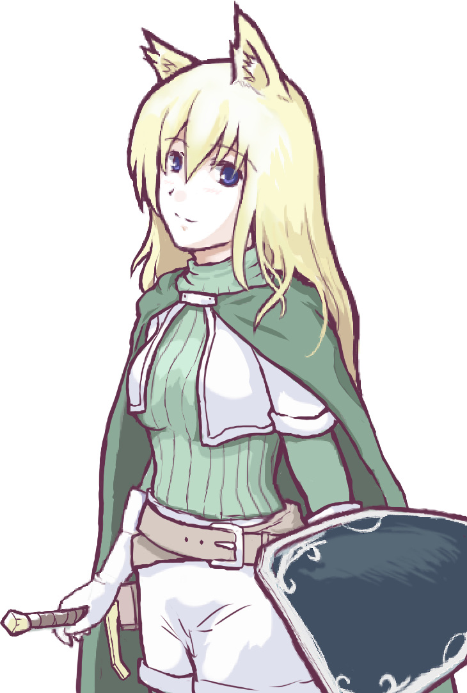
名前：リゼット・フロウライト / 半獣人・女
能力値：筋力2 機敏3 知力1 生命3 幸運0
最大HP：20+3 最大気力：2 奇跡点：0
所持金：金貨20枚 残り経験点：0
装備：中量武器[長剣]（2回攻撃）・盾（HP+3・回避+1・回避判定にファンブルすると破壊）
スキル
【盾装備】：防具「盾」種が装備できる
【先制行動+3】：先制判定で常に先制値+3
【かばう】：行動順が自分と同じか自分より遅い敵からの攻撃をかばうことができ、代わりに回避判定できる(1戦闘ターン1回)
特徴
★【ピンチに強い】：2Dの出目4以下なら気力1消費で出目を[14-出目]に変換できる
得意な判定
【騎乗・御者】： またがる乗り物や馬車を操る
ＧＭ:リゼットさんは半獣女性キャラの騎士！ 露出度が低いのがとてもいいですね！ ケモ耳なのがもっといい！
ブリンクＰＬ:やったー！ 獣耳だー！！
ＧＭ:んでリゼットさんの性能は命中と回避が高めの「回避型の盾役」という感じ！ 【かばう】は敵より速くないと使えないので、しっかり【先制行動+3】も取っておられる！
さらに特徴の【ピンチに強い】があるので、2Dの出目が悪くて4以下が出てしまったときにほぼ成功にできる安定性も見所です。
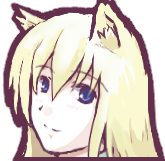リゼット:回避1ゾロで【盾】が壊れますからね。【ピンチに強い】を使えば防げるのは大きいです。
※回避判定では2D（サイコロ2つ）を振るのだが、両方とも1が出ると「ファンブル」となり【盾】が壊れてしまう。
ＧＭ:そしてリゼットさんの装備は【中量武器】と【盾】。この調子で鎧装着コースも期待できるぞ！ ビバ女騎士！
リゼット:くっ殺せ！
オーボスＰＬ:オーク！ オークが出てきますか！？ 大変だ！ R-18に備えろ！
リゼット:ちなみに、騎士っぽく【軽鎧】も欲しかったんですけどお金なかったんですよね……。
ＧＭ:それはこれからの冒険でお金を貯めてそろえていただければと思います！
オーボスＰＬ:よし、リゼットさん、語尾に「リゼ～？」をつけましょう！ これで大丈夫です。無礼だリゼ！ 打ち殺すリゼ？
リゼット:ひどい語尾だ！（笑）
ＧＭ:「～リゼ！」はどうかと思いますが、実際口調は重要なんですよ！ リプレイ読んでると特に！ 一文だけ出してもそのキャラだと分かるセリフが大事！
ブリンクＰＬ:今回は男2人とも丁寧語なんて使えない連中ですしノエルさんも丁寧語ではしゃべらなさそうなので、リゼットさんは普通の丁寧語で大丈夫かもしれませんね。
オーボスＰＬ:うーん、リゼットさんが正統派な美少女騎士になると、ノエル初ヒロイン計画が破綻しますね。ああ、ノエルは一生ツッコミ娘で終わるのであった。
ノエルＰＬ:ひどい！（笑）
ＧＭ:ということで女騎士さんを堪能したところでブリンクさんのキャラの検証に入ります。
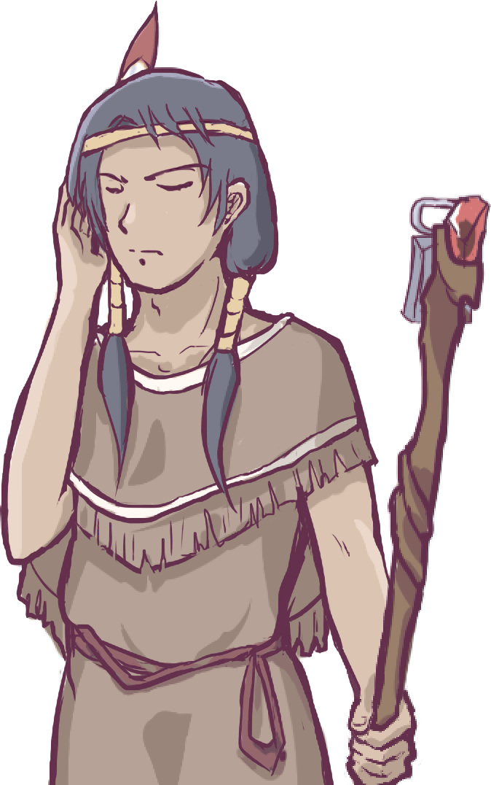
名前："精霊憑き"のブリンク / 人間・男性
能力値：筋力1 機敏1 知力4 生命1 幸運2
最大HP：10 最大気力：2+3 奇跡点：0
所持金：金貨10枚 残り経験点：0
装備：専用の術具[炎の杖](気力+3)
スキル
【動物会話】：2D+幸運で目標値8に成功すると10分間、虫や動物と会話できる・1時間1回
【特殊射撃 I】(↑4)：命中判定[2D+機敏+知力]で射撃攻撃、ダメージは防御無視の[知力+2]点
【ひらめき】 ：2D+知力で目標値10に成功するとヒントを1つ得られる･1日1回
特徴
★【自己再生】：1日に1回、自分の行動順で行動消費なしで[1D+生命]だけHP回復
※(↑4)は維持判定[1D+幸運]で4以上出せば消費せずに済む、の意味。
得意な判定
【読書好き】： 大量の資料を調べる判定
ＧＭ:【動物会話】がいかにもっぽい！ 【特殊射撃Ｉ】・【ひらめき】と基本は頭脳派タイプのスキル取りなんですね。
そして後衛的なパラメータにも関わらず特徴が【自己再生】！
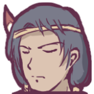ブリンク:フレーバー的な意味合いでなんか【自己再生】します！
ＧＭ:フレーバー！ なんだか尋常な生き物ではない予感！ GMがいじわるで後衛にバシバシ遠距離攻撃が飛んできたりする場面だととても役に立ちそうですね。
ブリンク:そして精霊憑きということで、【ひらめき】に成功すると精霊様からのなにかが受信できるような感じになると思います。
ＧＭ:ああ、それは重要な情報ですね！ 【ひらめき】時は精霊の声としてがんばります。
ブリンク:なにとぞよろしくお願いします。
ＧＭ:得意な判定は【読書好き】！ 完全に雰囲気バッチリ！
ブリンク:世の中の全てを見て回りたいぜ！ 何年生きるつもりなのか。
ＧＭ:人間だから普通に寿命で死んじゃうと思ったけど【自己再生】あるから不死かもしれない。
そして【専用の術具】（気力+3）を装備して気力も高めに！ 「幸運」も上げてスキルをバリバリ維持するスタイルに仕上がっている！ 魔法系でありながら長期戦もいけそうなスタイルですね、いいと思います！
ブリンク:やったー！ でも私もやしなのですぐ死んじゃうの。
ＧＭ:倒れても1回は【自己再生】で起きられますから大丈夫ですよ！
ＧＭ:そしてお次はオーボスさん。
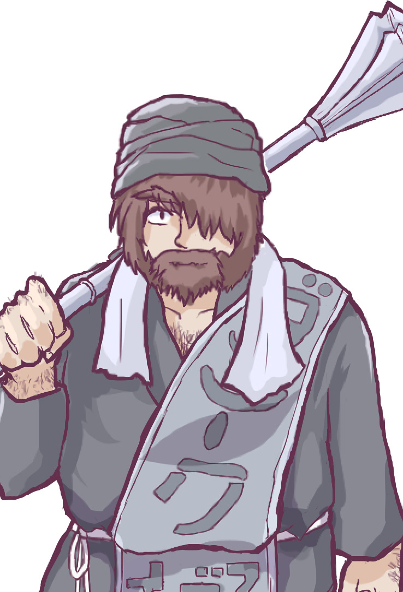
名前：オーボス / ドワーフ･漢
能力値：筋力4 機敏1 知力1 生命2 幸運1
最大HP：15 最大気力：2 奇跡点：0
所持金：金貨20枚 残り経験点：0
装備：重量武器[巨大メイス]（1回大攻撃）
スキル
【必中】(↑5)：1撃分の命中判定の出目を+1Dする
【強打】(↑4)：1撃分の近接攻撃ダメージを+1Dする
【重量習熟I】：重量武器によるダメージ+2
特徴
★【不幸好き】：自分含めた誰かが1ゾロを振るたび気力が1増加（上限無視）
得意な判定
【工学建築知識】： 機械や建物の情報を得る判定
ＧＭ:ガチ攻撃力特化！ という一言で大部分が片付けられそうなドワーフの漢さんですね。
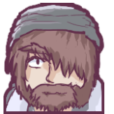オーボス:ワシにしては珍しいタイプのキャラだな。だが大丈夫だ。ワシに任せろ。
ブリンク:ダメージディーラー！ オーボスが倒れたら逃げる算段をしはじめる頃合い。
オーボス:ワシが倒れる未来が見えない。なに、問題ない。すべてなぎ倒すのだ。
ＧＭ:ただ機敏1なので、普通に殴ると半分くらい外れてリゼットさんと同じくらいしか平均火力がないかもしれませんね。
オーボス:命中率がないからこそワシには【必中】があるのだ。
ＧＭ:そう！ オーボスさんは【必中】スキルで強烈な一撃を確実に当てるスタイル！ 特徴【不幸好き】で気力回復もバッチリですね。意外とバランスいい？
得意な判定の【工学建築知識】は物語の中で「橋を造る！」とか言い出したときに便利なので案外活躍の場があるかもしれませんよ。他にもログハウスを作るとか、丸太を2本繋げて橋を作るんじゃーとか。
オーボス:斧を持ってないのでメイスでぶっ壊します……あれ？ 壊すの？
ＧＭ:壊すの！？
ブリンク:ブリンクとしては、ドワーフのオーボスさんとコンビ関係だった、とかあると楽しそうですがオーボスさんいかがでしょう。
オーボス:ではブリンクと仲良しになればいいんですね。
ブリンク:そうですね。何かヤバいことに巻き込まれて首を突っ込んでいたブリンクをかっこよく助けてもらって、それ以来道を同じくした、という感じで。
オーボス:何かヤバいこと？ ああ、夜の歓楽街でブリンクが理を求めていたところ怖いお兄さんにからまれて、これはまずいと思ったオーボスが巨大メイスを振り回して怖いお兄さんをふっとばしたために怖いお兄さんの集団に追われて逃げ回っているうちに旅団に参加したのね！
ＧＭ:オーボスさんの中で急にこれまでの物語がいっぱい決まっててすごい！
ブリンク:ああ、オーボスさんだわ……。
オーボス:エンジンに熱が貯まってきたぞ。ちなみにワシのストライクゾーンは身長120cm、体重50kgのロリプニドワーフじゃないとダメだ。
ＧＭ:了解です、覚えておきます！
ブリンク:おっと、こちらも会話する前に言葉づかいを脳内にインストールしないとまたキャラがぶれますね……シミュレート中……。
「オーボス、チカラが強い。付いていけば色々なモノ見られる。アイツ好きだ」
オーボス:「好きだ！？」
ブリンク:「そう。オーボス、いいやつ！ オレ、好き！」
オーボス:なるほど、ブリンクは原始人風のしゃべり方なんですね。
ＧＭ:ということで最後、ノエルさん！
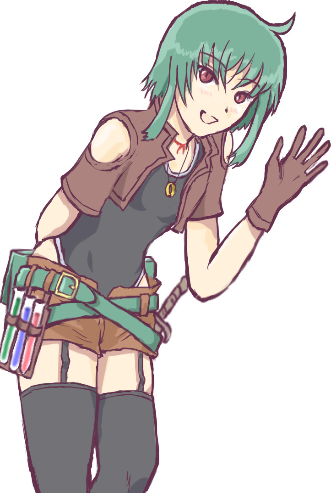
名前：ノエル / 人間･女
能力値：筋力1 機敏2 知力2 生命2 幸運2
最大HP：15 最大気力：2+3 奇跡点：0
所持金：金貨10枚 残り経験点：0
装備：専用の術具[形見の指輪](気力+3）
スキル
【格闘術】 ：素手のダメージを+2し、[筋力/2(端数切捨)+2]にする
【集中】(↑6)：自分の振った出目を、1Dあたり+1したことにする
【治療】(↑5)：1行動で対象1体のHPを[1D+幸運]回復
特徴
★【鋭敏感覚+3】：五感の感覚判定で+3・奇襲･聞き耳･毒に気付く際などに有効
得意な判定
【恐れ知らず】： 恐いものや現象に耐える判定
ノエル:種族は人間にしました。「幸運」が高くて平均的という種族「人間」イメージ！ 幸運が高いと交渉でも好印象をもたれやすいっていうのなら、やっぱりステータス的にも人間ってイメージしますし！
ＧＭ:いいですね！ ところでこのデザイン、下に着ているのは……水着！？
ノエル:レオタードです！！ 昔の有名RPGとかで女兵士がよく装備してるじゃないですか！ 機動性重視！
ブリンク:今度は不幸のダイスの神に好かれないといいですね。
ノエル:そのオチがありありと見えます！！
今回は普通の男の子でも普通の女の子でもなんかもうアレだからちょっと変わり種にしたいなーと思った次第でした。
ＧＭ:なるほど、男の娘……じゃなくてボーイッシュ系！
ノエル:ですです、男の娘の逆！
ＧＭ:そしてパラメータは結果的に超バランス型に！ 素手でちょっとだけ戦える回復役！
ノエル:筋力1/機敏2/知力2/生命2/幸運2、すっごい平均的に！
ＧＭ:このメンツ、「機敏」と「知力」による判定が弱そうなのでその辺も多少カバーしてくださっているのはいい感じかもですね。
ノエル:スキルとして【格闘術】を取っていちおう戦えるようにしています。
オーボス:【専用の術具】をナックルにして殴るんですね。わかりました。
ノエル:【専用の術具】はひもに通して胸にさげてます、ペンダント状態！
ＧＭ:さらにスキルに【治療】と、「特徴」としてスキル【鋭敏感覚+3】を取るというサポート要員っぷり！
オーボス:この中では「機敏」と「知力」と「探知能力」が高そうなので、盗賊系として働いてもらいたいところですね。
ＧＭ:あとパッと見の効果が地味で選ばれないかなと思ってたスキル【集中】もありますね、いいですね。 ※【集中】(↑6)スキル： 振ったサイコロ1個あたり出目を+1する。
ノエル:攻撃にも回復にも使えるので……！
ＧＭ:地味に強いですよ【集中】は！ なお得意な判定は【恐れ知らず】。恐怖判定が発生したときは強いかも。
オーボス:盗賊系なら一番最初に怖いものをみるハズですからね。
ブリンク:そう思っていたらジャングルで大岩が後ろから転がってくる展開が！
オーボス:大岩を壊せばいいのだ。ワシにまかせろ！ ぐしゃ、ぺらぺら～。
ＧＭ:さあ、キャラクターが決まったら、次はみなさんが所属する「旅団」の名前を決めます！
180秒だけ時間を取るのでアイデア募集しまーす！
ブリンク:ざわ。
ノエル:ダン・チョー……いえ何でもありません。
ＧＭ:ダンチョー旅団ですか、悪くないですね……。
ブリンク:グリーンタイドの団 ～処理回数が500000回を超えました～
リゼット:いやぁぁぁ！
ノエル:緑帯ィィイイ！！ ←※「緑帯」とはGMが作ったゲーム開発ソフト『WOLF RPGエディター』でエラーが出た画面のことを指す。つまりバグ発生の代名詞。
リゼット:いいんじゃないですか、グリーンタイド旅団。
ブリンク:もっとこう、●竜亭とか……まともな案を！
ＧＭ:「ホニャララの天馬」旅団、とかかっこいい名前を提案してもいいのよ！
ノエル:はずかしいです！！ 深く考えなければグリーンタイド旅団でいいんじゃないでしょうか！！
ＧＭ:ちなみに私はマジで何でもいいと思っています。愛着が湧くのが大事！
ノエル:私も「風の旅団」とかなんか平凡なのしか思いつかない……。
ＧＭ:よし、3分経過！ わたし英語がよく分からないマンですが語感がいいので「グリーンタイド旅団」は有りですね、GMはこれに一票！
グリーンタイド旅団はその名前のとおり、馬車が遠目にも分かる緑の帯でかざられています！ みたいな！
ブリンク:不吉だー！！
ノエル:不吉ッスね！
ブリンク:もっとこう……「穴空きし狼の団」とか！
ノエル:間をとって「緑の風の旅団」とかこう……こう……。
オーボス:だめだ、グリーンタイドが一番しっくりくるのだ。
ブリンク:こうして仮置きが仕様として取ってかわられていくのだ……私は言いだしっぺとして異論はありません。
ノエル:もう横文字でかっこいいから「グリーンタイド」でいいですよきっと……。
ＧＭ:では、ひとまず今回は 【グリーンタイド（仮）旅団】 でいきましょう！
ノエル:カッコカリ。
ブリンク:はい。
オーボス:「クリムゾンタイド旅団」もどっかにいてライバルになるのだ。
1. 始まり
ＧＭ:ではこれより始めていきます！ シナリオ開始前の準備を行ってくださーい。
【ゲーム開始前の準備】
・装備するスキルを3つ選ぶ。
スキル自体はたくさん覚えられますが、冒険に持って行けるのはそのうちの3つまでです。
ＧＭ:ということでおのおの、装備するスキルを3つ選ぶ、をしてください！
まあキャラ作りたてで所有スキルが3つしかないので、選ぶも何もないんですけどね。
リゼット:【スキル3つ】 ＋【特徴】ってことでしょうか？
ＧＭ:いい質問！ はい、その通りです！
ブリンク:【特徴】は変更できないので、そもそも選択はしないってことですよね。
ＧＭ:はい、【特徴】はどんなシナリオでも強制的に持って行くことになります。キャラメイクするときは、選んだ【特徴】と心中する覚悟で選択してくださいね。
ブリンク:では、今回私が持っていくスキルは以下3点です。
【動物会話】
【特殊射撃 I】(↑4)
【ひらめき】
リゼット:それでは、私は
【盾装備】
【先制行動+3】
【かばう】 を持っていきます。
ノエル:今回ボクが持っていくのは
【格闘術】
【集中】(↑6)
【治療】(↑5) だよー。
オーボス:【必中】(↑5)
【強打】(↑4)
【重量習熟Ｉ】だ。
ＧＭ:はい、出そろいました、みなさま宣言ありがとうございます！
ＧＭ:では、チュートリアル回である第1話『全ての始まり』、開始しまーす！
ブリンク:ワーオー！
ノエル:おー！
リゼット:よろしくお願いします！
オーボス:ワシに任せろ！
【旅団世界TRPG 第1話『全ての始まり』】 オープニング
君たちは、世界をかけめぐる【旅団】の一員だ。【旅団】は通常、数十名で構成されており、冒険や護衛、ときには行商を行いながら、はるかなる大地を、そして時には海を横断して旅をしている。
【旅団】を構成するものは馬車、それから人間・亜人・妖精……そこにいるヒトの種族はさまざまだ。ひょっとすると、君のいる旅団には1人も人間がいないかもしれない。
【旅団】の真価は、新入りである君たちにとって想像も付かないような【新たな大地・街・島・世界】を旅することにある。
ときにはとんでもない場所に迷い込むこともあるだろう。場所によっては蒸気機関なるものがあるかもしれない、機械の人間だけが住む帝国がどこかにあるかもしれない、魔法が存在しない地域があるかもしれない、不思議な扉を通じて別世界に飛び込むこともあるかもしれない。
旅団の長老でさえ、この世界は未知だらけなのだ。
さあ、次の行き先にはどんな冒険が待っているだろう？ 【旅団】は今日も道なき道をゆく。この果てしない世界をもっと知るために。そして、ときに人々の生活を守るために。
ＧＭ:ということで、みなさん4人はほんの数日前から旅団に加入した新しい団員です！
みなさんが合流した【ホームの街】では歓迎会が開けなかったということで、団長が気を利かせて旅の途中で歓迎会を開いてくれることになりました！
ブリンク:お、いいですね。
ＧＭ:みなさんは現在、日が落ちつつある野原のなか、30名ほどに囲まれた状況で横に4人並ばされています。
彼らは今後の仲間である【旅団】の人々です！ みなさんの目に映る顔ぶれは、老若男女さまざまですね。
ノエル:「（うっわー、色々いるなぁ、壮観！）」とか物珍しそうに見ています。
リゼット:緊張しています。
オーボス:怖いお兄さんがいないか確認しておくのだ。
ブリンク:団員たちを眺めています。
ノエル:女同士で隣に並んでいるかな？ 隣にいそうなリゼットさんに「（よろしくー♪）」とか小声で耳打ちしてあいさつしたりします。
リゼット:「ひゃあ！？」
ブリンク:（定番のあざとさ）
ノエル:（いまのはあざとさに入るの？！）
リゼット:「（小声でもよく聞こえてしまうので、耳元はやめてください……）」
ノエル:「（リゼットちゃんは耳が弱い ボク覚えた）」
ＧＭ:さて、そんな中、口ヒゲをたくわえた中年男性――『団長』が、周りの者たちに君たちのことを紹介し始めます。
団長「さて、早速だが、この1週間で4名もの新規団員が加入することになった。なんと今回は待望の戦士が2人もいるぞ！」
団長のその言葉を聞いた団員たちは、「おおー戦士だー！」と盛り上がります。
ノエル:「どんだけ戦士が少なかったんだろー……」
オーボス:「（戦士って誰だ？ ミミナガは身体がひ弱だと聞いている。カガクはもやし、とすると、あの男か女か分からないニンゲンか？）」
とキョロキョロしているのだ。
ブリンク:「たぶんオーボス、喜ばれているぞ。よかった」
オーボス:「む？ ワシか？ ワシは大工だぞ？」
ブリンク:「オーボス、立派な戦士だ。オレ、認める」
ＧＭ:と2人が話す横で、みなさんは陰で若者たちが何かこそこそ話しているのに気付きます。
ということで、ここで判定のチュートリアル！ 「聞き耳」の判定をやってみましょう！ 成功すると彼らのヒソヒソ話を聞くことができます！
ノエル:【鋭敏感覚+3】の出番ですね！！
ＧＭ:その通り！ 皆さん、2D＋知力で目標値10を判定してください！ これはサイコロ2つの出目に自分の「知力」を足した「達成値」が10以上であればその行為に成功するという意味ですね。
【鋭敏感覚+3】のスキルがあれば結果に+3できます。
ブリンク:2D+4 知力判定！
ｺﾛｺﾛ.. (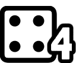4＋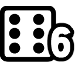6)+4 ＝ 14 +4成功！
リゼット:2D+1 知力判定！
ｺﾛｺﾛ.. (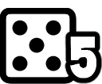5＋5)+1 ＝ 11 +1成功！
ノエル:2D+2+3 知力判定、【鋭敏感覚+3】込み！
ｺﾛｺﾛ.. (6＋ 1)+5 ＝ 12 +2成功！
1)+5 ＝ 12 +2成功！
オーボス:2D+1 知力判定、聞こえるぞ。
ｺﾛｺﾛ.. (5＋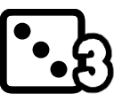3)+1 ＝ 9 -1失敗！
ブリンク:オーボス、聞こえていない。
ノエル:【鋭敏感覚+3】がなかったら失敗してたわ、ヒュー！
ＧＭ:どこか野性味を感じさせるブリンクさんが一番よく聞こえたようですね、けっこう難しい判定なのになんでこんなに成功するの！？
リゼット:幸先が良い。
ブリンク:逆です。無駄なところで運を使ったのです。
ＧＭ:では、成功したブリンク・リゼット・ノエルは3人の若者たちの会話が聞こえてしまいます。
若者Ａ「戦士はみんな一ヶ月前にいなくなったもんな……」
若者Ｂ「悲しい事件だったね……」
若者Ｃ「ああ、ここは俺に任せたまま逝ってしまったよな……」
リゼット:「そんな事が……私はこうみえても騎士なので、きっとお役に立てると思います」
ＧＭ:それを聞いた周りの人々は、「おお、騎士だってよ」「戦いのプロじゃん」という反応を返します。
ノエル:「というか、なんかあったのここ？」と空気を読まずにそれなりの声の大きさでつぶやいてしまいます！
ＧＭ:なら団長がゴホンと咳払いをして言います。
団長「あーうん、実は悲しい事故があって、戦士と呼べそうな者は大部分が脱落してしまったのだ……」
団長「みんな、新たに来た彼らは貴重な戦士だ、我々を守ってくれる一方で、我々も彼らを守らねばならない。みんな力を合わせるように」
ノエル:「なるほど……。ふむふむ、まあ色々あるよね！ じゃ、よろしく！」
ブリンク:「お前、怖くないか。勇敢なやつ。オレ、好きだ」
ノエル:「えー？ うん、なせばなるよー、あはは」と楽観的なかんじで笑います。
オーボス:「そうやって誰彼かまわず『好きだ 愛している』と言うから怖い人間に襲われるのだぞ、カガク！」
ブリンク:「オレの名前、ブリンク。オーボス覚え悪い」
オーボス:「これはニックネームと言うヤツだ。大工の棟梁からブキッチョと呼ばれていたワシに死角はないぞ。はははっ」
ノエル:「ブキッチョって……不器用ってイミじゃないっけ……」ぼそ。
ＧＭ:団長「さて……ひとまずこの辺で、1人ずつ自己紹介を頼みたいんだが」
ということで自己紹介の用意のできている人から呼びます！ 準備できてる人ー！
ノエル:ハーイ！
オーボス:はいはーい、オーボスが……いかん、反応速度が鈍かった……。
ノエル:じゃあボクが一番手でいいのかな？
ＧＭ:団長「ではまずノエルから頼む。この者は薬を扱う商人とのことだ」
ノエル:「はーい！ じゃあ改めまして……」
「こんにちは、ボクの名前はノエルっていうんだー。自己紹介だけど、まずケーゴとか小難しいハナシとかはニガテなんだ。でも、人とおしゃべりするのは好きだよー」
ＧＭ:団長「なるほど、おしゃべりが好きと」
ノエル:「甘い果物やおいしいお肉も好き。お魚はニガテ。あとは小さい物音とか、人の気配を察するの、トクイだよ」
ＧＭ:【鋭敏感覚+3】を持ってるということですね。
ノエル:「イチオー、薬の商人をしてるから、少しならケガの手当てとかできるよー。あといちおうの護身術程度はできるけど、戦闘のプロ！ みたいな人とはゼッタイやりあえないなー。って、この程度でいいかな、ダンチョー？」
ＧＭ:団長「うむ、ありがとうノエル。もし軽いケガをしたり、話し相手が足りなければノエルを呼んでくれ」
それでは、ここでみんなに対する印象判定！ ノエルさんは2D＋幸運で振ってください。
ノエル:ワオ！！
2D+2 幸運判定
ｺﾛｺﾛ.. (4＋1)+2 ＝ 7 普通！
【印象判定表】
特に相手の反応が決まってない場合、[2D＋幸運]で相手の印象を決定します。
1以下 超最悪 ： 状況さえゆるせば攻撃してくるほど憎い
2～4 最悪 ： 積極的に手は出さないがPCの行動は妨害したい
5～6 悪印象 ： 辛うじて普通の対応をしてくれる
7～8 普通 ： 特によいとも悪いとも思っていない
9～10 好印象 ： 普通の対応だが雰囲気はよい
11～12 お友達 ： 自分に損がない程度の親切をしてくれる
13～ 親友/恋人並み ： 自分が損する交渉でも許す場合がある
ノエル:うわあ振り直したいような出目。でも「普通」だから大丈夫かな！
ＧＭ:「普通」ですね！ ではノエルのあいさつは「おお～……」という感じで普通に受け取られました。
団員「なあ、あの子って男かなあ、でも女の子っぽいよな……」
ノエル:「あ、性別は好きなほうで捉えていいからー。ボクあんま気にしてないからー。そのほうが色々と楽しいじゃん？」
ブリンク:中性！？
ＧＭ:団員「（どういう意味なんだよ……ザワザワ……）」
ノエル:中性っぽいかんじですけどよく見れば女ってすぐわかりますよ！！
ブリンク:よく見れば（セクハラ）。
ノエル:男だと思ったとか言えばとりあえず正当化されます！
ＧＭ:団長「では次はオーボス、頼む」
オーボス:「うむ、ワシはオーボス、メドドの集落の出身だ。大工の修行をして、その、集落に立派な家を建て終えたから旅にでることにした」
ＧＭ:団長「なるほど、大工と……その巨大なメイスは頼りになりそうだな？」
オーボス:「ん？ メイスは大工道具だ。うん、問題ないな」
ノエル:「メイスって大工に使う道具だっけ。どう使うの？」と思わず尋ねます。
オーボス:「こうやって、（ブンと振り回す）木を切るんだ」
ノエル:「うんそれ切るっていうかなぎ倒すって言うんじゃないのかな！」
オーボス:「あとバーグラの実が好物だ。うまそうなバーグラの実があったらくれ。もちろん無料でな。まぁ、とりあえず、よろしく頼む」
ＧＭ:団長「オッホン、ありがとう、バーグラの実は俺は喰ったことがないので知らないが、うまいのだろう。彼は自称大工らしいが、もし魔物や山賊が出たらまず彼を呼ぶと頼りになるはずだ」
みたいな感じで、大工であろうがやっぱり戦闘員扱いです。
ではここでオーボスさんも印象判定！ 2D＋幸運です！
オーボス:2D+1 印象ちぇーっく
ｺﾛｺﾛ.. (3＋1)+1 ＝ 5 悪印象
ＧＭ:5～6 悪印象 ： 辛うじて普通の対応をしてくれる、です！
オーボス:おお、ドワーフちっく！
ノエル:異種族ーってかんじ！ あいつ何しでかすかわからんぞみたいな……。
ＧＭ:「悪印象」なのでこのようなコメントが聞こえてきます。
団員Ａ「おい、アイツ人間じゃないよな……」
団員Ｂ「大工っていってるけどアレで殴られたら死ぬぜ……」
団員Ｃ「ちょっと恐くない……？」
団員Ｄ「でもよく見たらどこかかわいげのあるおじさんじゃない……？」
ブリンク:最後の人ちょっと。
ノエル:普通にちょっと好印象の人がいる！
ＧＭ:団長「オッホン！ たしかに彼は異種族だが、人間より優れた面もたくさんある。共に手を取り合うのが、より高みを目指す上で大切なことだ」と団員たちをたしなめます。
ノエル:「（というか戦士ふたりとも、異種族なんだね……）」
ＧＭ:「さて、次は……ブリンクだ、頼む」
オーボス:「こいつはカガク、もやしだ」
ブリンク:（無視して）「はじめまして！ オレ、ブリンク！ 母なる大地、父なる空、そして『カガク』の精霊に抱かれし族の子！ オレ、世界をもっと知りたい！ オレ、学ぶ！ 強くなる！」
ＧＭ:団長「うむ、勉強熱心なのはよいことだ」
ブリンク:「それとオーボス、仲間だ！ こいつ、いいやつ。頭悪いけど、いいやつ！」
ノエル:「（仲間想いのいい人なんだなー）」
ＧＭ:団員Ａ「もやしっぽいなあ……」
団員Ｂ「あれ、学者系？ 先住民っぽい感じでとてもそうは……」
とやや困惑した表情をしています。
団長「ありがとう。見た目は少し変わっているが根はいい者だ、仲良くしてやってくれ」
ではブリンクさんもここで印象判定！ 2D＋幸運で振ってください。
ブリンク:2D+2 幸運判定！
ｺﾛｺﾛ.. (4＋5)+2 ＝ 11 お友達！
ノエル:お友達ー！ ブリンクさん旅団の人にモッテモテだわ！
ブリンク:わぁい。
ＧＭ:11～12 お友達 ： 自分に損がない程度の親切をしてくれる
団員Ａ「精霊だって！ 俺も精霊信仰だから友達になれそうだ！」
団員Ｂ「同じ人間同士だ、仲良くやれそうだぜ！」
団員Ｃ「しゃべり方が変なだけで意外とイケメンよね！」
という感想が聞こえてきました！
ブリンク:「オレ、体強くないけど強い！ 知ってるから強い！」
ノエル:「アタマがいいんだねー！」
ＧＭ:団員「おっ、やっぱり意外とインテリじゃね？」
団員「ンガボボ族に似てるな……」
ノエル:ンガボボ族って何！？（笑）
オーボス:「さ、さみしい……ワシだけ嫌われてオーボスさみしいぞ」
ブリンク:「オーボス、元気出す。見た目の違う奴、警戒する、イキモノなら当たり前」
ノエル:「友達想いのいい人と、力持ちのおじちゃまかー」
ＧＭ:団長「では最後にリゼット、頼む。腹が減る名前だな」
団員「団長、それリゾットです」
ノエル:リゾット……。
ＧＭ:ということでリゼットさんどうぞ！
リゼット:「はじめまして、リゼット・フロウライトです」
「騎士の家の生まれですが、私の国では騎士というのはもう身分だけのようなもので……時代遅れのものなんです」
「それでも、騎士らしい生き方をしてみたくて、ここに来ました。昔おじい様が話してくれたような生き方を……」
ＧＭ:団長「なるほど、騎士を目指しているなら我々にとっても望ましい人材だ」
リゼット:「この盾にかけて、みなさんをお守りします。よろしくお願いいたします」
ノエル:好印象な自己紹介……！
ＧＭ:そうですね、安心感がある！ それを聞いて、みんなから「おおー……」と感嘆の声が漏れます。
ではリゼットさんも印象判定をどうぞ！ 求められる人材っぷりアピールが効果的だったので+1のボーナスをあげましょう。2D＋幸運＋1でどうぞ！
リゼット:やった！
2D+1 幸運判定！
ｺﾛｺﾛ.. (3＋4)+1 ＝ 8 普通
ふつうだ！
ブリンク:ふつう！ 一番まともな人なのに！ 戦士なのに！
ノエル:獣耳が人間からしたらマイナス要素だったというのか！
リゼット:期待値じゃ【ピンチに強い】も使えないからなぁ……。
ＧＭ:「7～8 普通 ： 特によいとも悪いとも思っていない」ですね！
団員Ａ「おおー、古めかしいけど確かに騎士っぽいよな……」
団員Ｂ「さわやかだ、悪い人じゃなさそうだね」
団員Ｃ「でも、きっと人間じゃないよね、あの耳とか……」
団員Ｄ「いや、俺はあのケモ耳がいいなあ……！」
ノエル:全体的にやはり好印象！
ＧＭ:団長「うむ、リゼット、ありがとう。半獣人が少ない地であるここまで来たところから見て、いろいろ苦労があったんだろう……みんな仲良くしてやってくれ」
ブリンク:「ところでオーボス、キシってなんだ？」
オーボス:「キシというのは川の端っこの部分だな。海の端っこの部分もキシというぞ」
ブリンク:「なるほど。リゾットは端っこの家、生まれた。それは苦労するな」
オーボス:「そうだ、端っこの家は大変だ。もしかしたらウキョキョロ虫がでるかもしれない」
ノエル:「えっ、2人ともこの話の流れでその展開にもってくの……？」
リゼット:（何か誤解されている気がする……）
ＧＭ:どうやら隣の男2人は「騎士」というものを知らないようです。
ノエル:「あ、リゼちゃんリゼちゃん、新入り同士ボクら仲良くしよー！」と懐きます。
リゼット:「よろしくお願いします、ノエルさん」
ノエル:「おーレイギ正しい……！ いい子だ、リゼちゃんいい子だー！」
ＧＭ:ああ、これでいいんだよ！ なんかこのセッションで初めて普通キャラに出会った気がする！
……なんでGMがこんなことで感動するんだ。
ノエル:今までのが普通キャラじゃなかったみたいに聞こえますがGM！！
ブリンク:気のせいでしょう。
ＧＭ:ゴホン！
ＧＭ:さて、自己紹介が終わりました。パーティー内で親交を深められそうなタイミングはしばらくないので、話したいことがあったら今のうちにどうぞ！
ブリンク:「よろしく、ノエル！ よろしく、リゾット！」
ノエル:「……カガクだっけブリンクだっけ！ えっとカガク！ うんよろしく！」
ブリンク:「オレ、ブリンク！ 人の名前覚えないの、恥ずかしいやつ！」 自分のことは棚に上げます。
ノエル:「あ、ごめんごめん、そこのおじちゃまがそう呼んでたから、どっちかファーストネームとかだったりかなーって思ったのー」
「ブリンクって呼べばいいんだね？ ごめんね！ あらためてよろしく！」
オーボス:「人間達はリゾットがおいしそうとか言ってたな。リゾットうまい。ふむふむ。今度食ってみよう」
モサモサの髪の下から黒い眼光がぴかーんと光ってリゼットを見ます。
リゼット:「よ……寄ると斬りますよ！」
オーボス:「斬るとうまいのか……ふむふむ……」
ノエル:「リゼちゃん……あのおじちゃまには近づいちゃダメだよ……」
ＧＭ:オーボスさん、隣の人にさえ不人気説。
ブリンク:「リゾット、緊張してるか？ それとも動物のコトバ、使うか？」
リゼット:「あ、いや、耳はこれですけど、動物の言葉は使わないのでちょっと」
ブリンク:「そうか、悪かった！ よろしくな！ リゾットみたいなやつ見るのはじめて！ だけどその耳似合ってる！ お前、好きだ！」
ノエル:「あ、本当に好きだって言った」
リゼット:「そんな突然、恥ずかしいです……って、あれ？」
オーボス:「そうだな、うまいらしいからな、それは好きだって言ってもいいぞ」
ノエル:「リゼは食べ物じゃないよー！ もー！」 ぷんぷん。
ブリンク:「そうだ、リゾット、食べ物違う、当たり前。オーボス、頭悪いの仕方ない。許せ」
ＧＭ:（もう完全にリゾットで定着してる……）
リゼット:「私はリゾットじゃなくてリゼットです！！」
ブリンク:「おお……リゼット。リゼット！ 悪い！」
ノエル:「人の名前間違えて覚えるやつは、なんだったっけ！」
ブリンク:「そう、恥ずかしい。オレ、恥ずかしいやつ。でも次からは間違えないぞ、リゼット！」
オーボス:「カガク！ そこはリゾットって言い間違わないと減点だ」
ノエル:「あ、ちみっこいおじちゃまもよろしくねー」
オーボス:「で、そっちのオスかメスか分からないのが……のえるんか、ふむ」
ノエル:「おじちゃまはアレなの。ボクにいきなりアダ名なの」
ブリンク:「オーボス、人間のことわからないの仕方ない。ノエル、女の子だ。よく見ればわかる」
ノエル:「えへへ、そうだよ。ありがとねっ」
2. 腕試し
ＧＭ:では自己紹介を終えて解散ムードに入る直前に、団員の中から声があがります。
団員たち「団長ー！ 彼らはどのくらい強いんですか！」
団員たち「そうだそうだー、ちょっとは腕前を見せてくれよ！」
血の気の多い若者の男性陣がはやし立てていますね。それを見て「やれやれ……」という顔になっている団員の女性陣とご高齢の方々。
ノエル:「えーっと、のうあるタカはツメを隠すんだっけー？」
ＧＭ:しかしみなさんの能力については団長も気になっていたようで、こう切り出します。
団長「なら……よかったら、試しに戦ってみるか？ なあに、余興としてこれ以上のものはないぞ、団員たちからの評価も上がるだろう」
ノエル:「んー、いいのかな？ ケガしちゃっても責任とれないよ？」とかいいながら軽く腕をストレッチしています。
ブリンク:厄介なことになったな、とブリンクは思います。なるべく手の内は見せたくないのです。
GM、ここで【ひらめき】スキルを使ってもいいですか？
ノエル:まさかの使い道！
スキル【ひらめき】（1日1回）
2D＋知力で目標値10の判定に成功するとGMからヒントを1つ得られる。
ＧＭ:いいですよー何について知りたいですか？
ブリンク:この団の人々は信用に値するか、手の内を見せても大丈夫か、あるいは戦闘そのものを避けたほうがよいかを知りたいです。
ここで使っておかないと使い道なさそうだし！
ＧＭ:では【ひらめき】に成功したか判定です！ えーと、「2D＋知力」で目標値10を判定してください。
ブリンク:2D+4 知力判定！
ｺﾛｺﾛ.. (6＋4)+4 ＝ 14 +4成功！
ノエル:おおおお！
ＧＭ:成功です！ 出目でっか！
ブリンク:サイコロに好かれているなあ、この男。
えー、ではとにかくブリンクは精霊様の声を聞きました。羽飾りのあるほうの耳に手を当ててスタンバイ中です。
ＧＭ:おっと、【ひらめき】は1人だけに情報を渡した方が面白いかもですね。試しにやってみますか！
ブリンク:おお、面白い試み。
オーボス:なんてこった、世間知らずのカガクだけに情報を渡すなんて……だが、大丈夫だ、問題ない。ワシが通訳してやる。
リゼット:余計に不安が！
ノエル:リゼットさんが普通に思ってることを言ってくれた！！！ ツッコミ役が他にいると助かるなあ！！
ＧＭ:では、ブリンクは精霊の声が聞こえます……。
【ひらめきで聞こえた精霊の声】 ※この情報はブリンクだけに公開されている
＜この団の人々は信用に値するか（手の内を見せても大丈夫か）？＞
精霊によると、この中にみずから情報を漏らす人はまずいない、とのこと。
＜戦闘そのものを避けたほうがよいか？＞
デメリットはまったくない。今いる野原は敵に襲撃される可能性もないに等しいし、そこに用意されている武器は木の武器で、致死的なケガをしないものだ、と精霊に教えられた。
ＧＭ:ひらめいたブリンクさんは、表情の変化またはコメントなどをお願いします。
ブリンク:「ムムム。聞こえた」
ノエル:「なんなのなんなのどうしたのー？」
オーボス:（あざとい）
ノエル:（いまのはあざとさ込めてないのにー！！（笑））
ブリンク:「カガクの精霊様からのお告げ、聞こえた。この人達、信頼できる。戦術明かしても、漏れない！」
ノエル:「あっ、うん、今からお世話になるしね」
ブリンク:「それから、戦っても安全！ だからチカラ！ 見せる！」
「オレ、やる！ 弱いと思われる、悔しい！」
オーボス:「怖いお兄さんではないのか！？」
ブリンク:「怖いお兄さん、いないぞ。大丈夫」
オーボス:「そうか、ではワシが嫌われているのは純粋に奴らが性格悪いだけか、ならその性格を建て直してやるか……大工だけに！」
ほら、ここ、笑うところ。
ノエル:「精霊様は、ボクらが相手の人に勝てるかーとかは教えてくんないのー？」
ブリンク:「それ、なかった。ただ、ときどき精霊様、変なこと言う。信じる、信じない、みんな次第だ」
リゼット:「なんとも不思議な能力ですね」
ノエル:「んー、ブリンクが言うことなら信じるよ、これはボクのカン！」
ノエル:「じゃあダンチョー、ボクらどうすればいいのー？」
ブリンク:「あの武器、使うんだな？」と、そばに置かれている木製武器を指さします。
ＧＭ:団長「むっ、さすがだな……その通りだ。実はこういうこともあろうかと準備していてな」
ノエル:「へー、ブリンクって本当にすごいんだね！」
ブリンク:「すごいの、オレじゃない。すごいの、精霊様」
ノエル:「そうだね。でもそれを聞けるブリンクもやっぱりスゴイよ」
ＧＭ:では、チュートリアル戦闘を引き受ける方向でいいならOK、そうでない場合はNGを挙げてね！
ノエル:ノエルは引き受ける所存です。
ブリンク:ブリンク、OKです。
オーボス:「ああ、ワシの武器は大工道具だからな」 ぶんぶん、素振り中。
リゼット:「実力をお見せしましょう」 リゼットOKです。
ＧＭ:では、全面的にOKですね！
以下、団長からルール説明です。
【団長から説明された模擬戦のルール】
・戦いは2：2で行うこと。
・2～3戦闘ターンを終えた時点で終了とする。
・今回は訓練用の木の武器で戦う、この武器で仮にHPがマイナスになっても、相手を【重傷】状態にしたり殺したりすることは絶対にない。
ＧＭ:ということで、みなさんに木の武器が渡されます！ この木の武器なら、殴って大ダメージを与えても、死んだり重傷になったりしないものとします。この戦闘だけね！
ノエル:「でもボク、武器はいらないや。このままでいーい？」
と素手をぷらぷら……ん？
【素手】の人は木の武器を装備しなかったらガチダメージになっちゃう！？
ＧＭ:【素手】はルール的に確実に手加減ができます！ 相手のHPを0未満にしても0で止められるものとします。
まあもともとノエルさんのダメージ大したことないんですけど……。
ブリンク:た い し た こ と な い。
ノエル:わーい、了解です！ 実際たいしたことないですしね。2ダメージ×2回だけ。
ブリンク:こちらは、「オレ、これないと戦えない。これ、使っていいか？」と【専用の術具】の炎の杖を示します。ちょっと太い木っぽい杖です。
ＧＭ:団長「ああ、術具を使ってもかまわないぞ！」
ブリンク:「よかった、団長、いいやつ！」
オーボス:「ん！？ ワシのメイスは使ってはダメなのか！？ ……ワシの大工道具……」
ＧＭ:団長「これも重量武器だし大工道具だ、心配するな！」
ドーン！ と巨大な木槌を渡されます！
オーボス:「おお、これは家を潰すときに使えるな」
ブリンク:いくら木の武器でもそんなので殴られたら死んじゃう！
ＧＭ:そんな気はしますがルール上は大丈夫とします！！
ＧＭ:では模擬戦は2：2のバトルなのでまずチーム分けを行ってください！
ブリンク:「リゼット！ オレ、強いぞ！ 一緒に戦う、どうだ？」
ノエル:「えー、ボクがリゼと組みたいのにー！」
ブリンク:「ノエル、リゼと組む。そうなると、オレとオーボス、組む。オレたち、今まで一緒に戦ってきて息合ってる。お前たち、負けるぞ」
ノエル:「うぬぬ、そ、そんなことは……」
オーボス:なぜ、オーボスここまで人気ないの……。
ＧＭ:私の妄想では、オーボスさんがこの状況になってもぽつんとしている中、ブリンクがやってきてオーボスの手を取ろうとするわけですよ。
オーボスさんはブリンクからやさしく差し出された手を取って……あ、何でもありません。
オーボス:GM、それ、さびしいから、それ、寂しいから！！！！
やはり大工なのが悪いのか……。
ＧＭ:じゃあ要求がぶつかったら最後はサイコロで決めますので、ひとまず好みの要望だけ宣言してくださーい！
ブリンク:ブリンクはリゼット希望です。
リゼット:リゼットはノエルと組みたいです。
ノエル:お、相思相愛！ キャラ的にはリゼちゃんと組みたい気持ちだと思います！
ブリンク:それはそれで、ククク。
オーボス:「えーい、面倒臭い、ワシひとりで大丈夫だ！ 問題ない、ワシに任せろ！」
ＧＭ:えーと、整理すると以下の通りですね！
「リゼットさん → ノエル」
「ブリンクさん → リゼット」
「ノエルさん → リゼット」
「オーボスさん → 1人」
ブリンク:オーボスー！！
ノエル:オーボスさん……。
ブリンク:悲しいバトルロイヤルだわ……。
ノエル:3人、と、ひとり、にわかれました……かわいそう！
ブリンク:相思相愛を引き裂くのは奥ゆかしくない。ブリンクは察してオーボスと……。
ＧＭ:団長「むむ、オーボスが1人になりそうだと！ では……」
そう言うと、団長が木の剣を取ってこっちにやってきました。やる気です。
ブリンク:あっ、じゃあなかったことに。
ノエル:ってダンチョー戦うの！？
オーボス:えー。一騎打ち！ 一騎打ち！
ＧＭ:なんですって！ なんとオーボスさんはタイマンがご希望でしたか（どういうタイマンか分からないけど）。
ブリンク:しかしこれはハイパー団長にボコられるイベントのほうが。
ノエル:おいしいですね！
オーボス:いや、このシステムなら相手が団長といえど、強さにそんなに大きな差は出ないハズだ……。
ＧＭ:団長「俺がオーボス側について3：2になればそこそこいい勝負になるだろう？」
ノエル:おー。まさかの3：2！
ＧＭ:ということで問題がなければ団長からの提案で、3 vs 2のバトルを行うものとします！
オーボスさんとタイマンでやるとほぼ一撃ずつで終わるー！
ブリンク:リゼット以外の2名が順番に1ターンで撃破される未来が見えます。
ノエル:そういえばブリンクさんの生命力がアレでしたね。 ※ブリンクは最大HPが10しかない、ノエルは15
ＧＭ:では団長の能力作るので2分待って下さーい。
ノエル:はーい！
ちなみにノエルは戦力というよりもサポートだから、攻撃役があってこそなんですよねー。
リゼット:そういえばリゼットも壁担当で攻撃役じゃないんだった……。
ノエル:そう、だからリゼと2人だけで組むと火力が足りないし、逆側は火力が超充実しちゃうんですよ。守りの2人と攻めの2人に分かれてる！
ＧＭ:そうそう。なので理想はオーボスがリゼットかノエルと組んで、残った2名と戦うのがバランスいいんですよね。仲良し組で組むと微妙にバランス悪いという。
ＧＭ:よし、団長のデータができました！ 気力2、作りたてPCとほぼ同じで特徴だけなしのNPCとして参戦します。名前もありますよ。
ブリンク:ごくり。
オーボス:名前がちゃんと決まってた！ グリリンとかだとおもったのに！
ＧＭ:あ、今さらですが団長の姿はこんなんです。名前はギリアム。
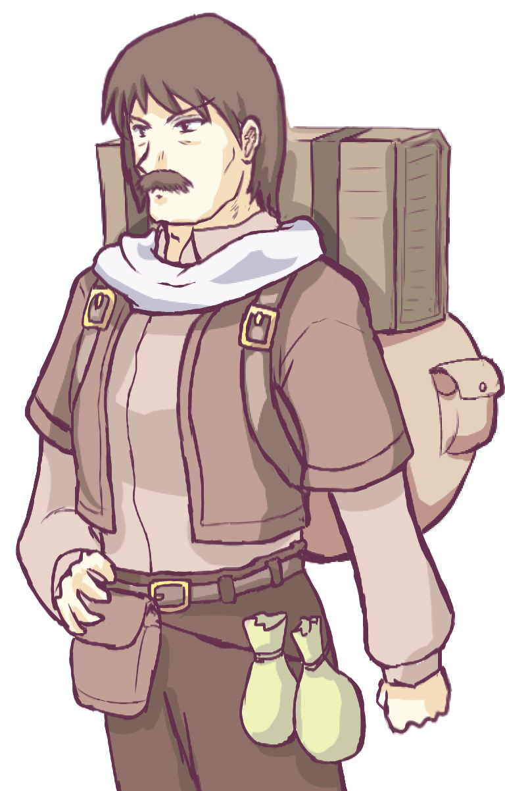
名前：団長ギリアム / 人間･男
能力値：筋力3 機敏3 知力1 生命2 幸運0
最大HP：15 最大気力：2 奇跡点：0
装備：中量武器
スキル
【見切り】：気力1消費で1撃の回避達成値を+2
【カウンター】：近接攻撃を+2成功度以上で回避した場合､その回避達成値を命中力として[筋力]ダメージの反撃をする
【身代わり】：他者が受けたダメージを代わりに引き受ける、回避はできない（1戦闘ターン1回）
オーボス:（プレイヤーが）前世で見たことあるって言ってる……。
ノエル:ボクも前世で見たことある……。
ＧＭ:この人を一言で紹介すると、「頼りになる奥さんがいる元キャラバンの隊長キャラ」です！ GMがやった他のセッションで、50回分もセリフを言ってない端役として登場したことがあります。デザインしなおすの面倒くさかったんで……。
今回はバランス型ファイターでカウンターを狙ってくるタイプです。
ＧＭ:では、団長・オーボス vs リゼット・ブリンク・ノエルというスペシャルマッチが開かれるとのことで、女も男も老人も、団員たちは夜の準備を始める手を止めて、目を輝かせながらあなたがたを見ています。
団員たち「うおーやったー！」 「ワクワクするなあ！」
ということでバトルスタート！
まず戦闘開始時に、みなさんは「前衛」か「後衛」のどちらに行くかそれぞれ決定して下さい！ 団長ギリアムは「前衛」を取ります！
【前衛と後衛】
「前衛」と「後衛」の違いですが、このゲームの「近接攻撃」は「味方前衛」から「敵前衛」にしか当たりません。「射撃攻撃」なら前衛・後衛のどこからどこへでも攻撃できます。
「後衛」にいれば敵の近接攻撃を喰らわないので安全ですが、誰も「前衛」にいない場合は「後衛」にいるキャラが強制的に「前衛」にされてしまいます。なので、最低1人は「前衛」に立たねばなりません。
リゼット:「前衛」に立ちます。
ブリンク:ブリンク、「後衛」！
「オーボス、一度戦いたいと思ってた。ちょっと熱くても許せ」
ノエル:「ボクは前に出るよー、それとも下がってたほうがいい？」
リゼット:「ノエルさんも前へお願いします。背中は私が守ります」
ノエル:「ありがと♪ んじゃ遠慮なく！」
と革の手袋をきゅっとはめ直します。
オーボス:じゃあ、オーボスは「後衛」……。
ノエル:まさかの。
オーボス:うそ、うそ、オーボス超「前衛」！
ＧＭ:では、隊列は以下の通り！
Aチーム
前衛 リゼット・ノエル
後衛 ブリンク
vs
Bチーム
前衛 オーボス・団長
ＧＭ:戦闘では毎戦闘ターン、行動順を決める【先制値】を算出します！ みなさん、【1D＋機敏】で判定して下さい！
ノエル:1D+2 ノエル 先制判定
ｺﾛｺﾛ.. 4+2 ＝ 6 先制値！
ＧＭ:1D+2 先制判定！
ｺﾛｺﾛ.. 6+2 ＝ 8 先制値！
オーボス:1D+1 先制判定！
ｺﾛｺﾛ.. 3+1 ＝ 4 先制値！
リゼット:1D+6 先制判定！
ｺﾛｺﾛ.. 4+6 ＝ 10 先制値！
ブリンク:1D+1 先制判定！
ｺﾛｺﾛ.. 1+1 ＝ 2 先制値！
ＧＭ:行動順はリゼット10 ＞ ギリアム8 ＞ ノエル6 ＞ オーボス4 ＞ ブリンク2！
ではまずリゼットさんの行動から！
ブリンク:「リゼット！ 戦い方、任せる！ オレ、呼吸合わせる！」
ＧＭ:となると、リゼットさんはオーボスとギリアム、どっちからやっつけるかが肝ですね。
オーボス:かかってこーい。
ＧＭ: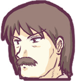団長「かかってこーい（カウンター）」
すごい、持ってるだけでプレッシャー与えられるから【カウンター】も実は強いかもしれない。
ブリンク:【カウンター】を構えている相手には弓か魔法で攻撃すればいい。精霊様言ってる！（言ってない）
ノエル:ダンチョーのほうが機敏高いから攻撃当ててきそう……しかしてオーボスもスキルありであの火力！
リゼット:では、リゼットはダンチョーに攻撃します。
ＧＭ:団長「いいぞ、来い、騎士の力を見せるのだ！」
オーボス:（よし、ここはリゼットに協力して団長を倒し、この旅団を乗っ取ろう……い、いや、じょうだんだぞ……）
ＧＭ:（そういう野心があってもいいですよねー）
ではリゼットさんは攻撃判定を振ってくださーい。【中量武器】なので2回攻撃できます！
リゼット:「行きます！」
2D+3 中量武器2回の命中判定！ (ダメージ3)
ｺﾛｺﾛ.. (4＋6)+3 ＝ 13 命中力！
ｺﾛｺﾛ.. (5＋1)+3 ＝ 9 命中力！
ノエル:おおー！ 出目10！
ＧＭ:団長「うおおおお！？」
2D+3 団長の回避判定、13と9に！
ｺﾛｺﾛ.. (6＋5)+3 ＝ 14 +1回避成功！
ｺﾛｺﾛ.. (2＋2)+3 ＝ 7 -2回避失敗！
って数字が大きい一発目だけ避けるんかい！ じゃあ団長は二発目をそのまま受けます！ 3ダメージ！
団長「ぐっ、やるな！」 団長HP 15→12！
リゼット:「さすがは団長どの」
ノエル:「あれを避けちゃうんだぁ……ダンチョー。リゼ、すっごいよー！」
オーボス:ん？ 先生～、これってダメージに乱数はないんですよね？
ＧＭ:はい、ありません！ 基本的に固定ダメージです。
【攻撃について】
『旅団世界TRPG』では、攻撃は「命中したか否か」だけを判定し、【ダメージ自体は固定】となっています。
ただし、もし命中判定時のサイコロ2個（場合によっては3個）の出目の合計が【11以上】になった場合は「急所攻撃」が発生し、ダメージが追加で+1Dされます。
ＧＭ:しかし回避の達成値が足りなくて【カウンター】できんかったー！
では次、団長が8で動きます！ 団長はリゼットの【かばう】を使わせるためにノエルを狙います！
ノエル:ですよね！
ＧＭ:2D+4 ノエルに中量武器2回の命中判定！ (ダメージ4)
ｺﾛｺﾛ.. (5＋4)+4 ＝ 13 命中力！
ｺﾛｺﾛ.. (5＋3)+4 ＝ 12 命中力！
ノエル:避けられる気がしない！
オーボス:サイコロが殺しにかかってる！
ブリンク:ノエルー！ でも大丈夫！ ダメージは固定だから！
ＧＭ:団長「久々に振ったこの剣、衰えていないようだな！」
ではノエルさんはひとまず回避判定してください。一発でも当たって「イヤダー！」ってことならリゼットさんに【かばう】で受けてもらえます！
ノエル:「くっ……さすがダンチョー！ でも、ボクだって……！」
2D+2 回避判定、13と12に！
ｺﾛｺﾛ.. (4＋1)+2 ＝ 7 -6回避失敗！
ｺﾛｺﾛ.. (5＋4)+2 ＝ 11 -1回避失敗！
はい。
ＧＭ:えーと、二発ともヒットですね！ このままだと4×2ダメージを受けます！
ブリンク:気力！ 気力！（でもだめなんだろうなあ）
ＧＭ:いえいえ、ここでリゼットさんの出番でしょう。
リゼット:【かばう】！
ＧＭ:そう、ここで【かばう】スキルを宣言すれば……ターゲットが変更され、両方ともリゼットさんが回避判定を振ることができるのです！
ということでリゼットさん、回避判定を2回に対して行ってください！ 目標値は13と12！
ノエル:おお！
ＧＭ:リゼットはノエルへの攻撃を身を挺してかばいます！
リゼット:「あぶない！」
2D+4 回避判定、13と12に！
ｺﾛｺﾛ.. (3＋1)+4 ＝ 8 -5回避失敗！
ｺﾛｺﾛ.. (1＋1)+4 ＝ 6 ﾌｧﾝﾌﾞﾙ！
ＧＭ:アッー！
ノエル:ブワッ。
「リ、リゼ……！？」
リゼット:【盾】が壊れました！（笑）
ブリンク:リゼットさーん！！
【防具の【盾】について】
【盾】は金貨20枚でHP+3、回避+1できるという安価で有用な防具ですが、【盾装備】スキルを持っていないと使えないのに加え、回避判定時に1ゾロ（ファンブル）を振ると壊れてしまうという弱点があります。
ＧＭ:え、えーと回避判定で1ゾロを振ったのでリゼットさんの【盾】が壊れます……まだ戦闘始まったばかりなのにー！？
ブリンク:バリーン。
オーボス:「ミミナガ、やはり戦闘は不得意だな……」
ＧＭ:もしこのまま行くならリゼットさんは自分のシートからアイテム【盾】を削除することになります……が！？
リゼット:あ、そうだ【ピンチに強い】があった！ 使います！
特徴【ピンチに強い】
2Dの出目の合計が4以下だった場合、気力を1消費することで【出目】の合計値を[14－出目]に変換することができます（※サイコロを上下ひっくり返すのと同じ）。
ＧＭ:そう、気力1で出目を逆転させる特徴、【ピンチに強い】があります！ 使用OK！ ではリゼットさんは気力を1を消費して下さい！
リゼット:2回目の1ゾロを反転すると12になるから……達成値16かな？ 気力2→1
ＧＭ:はい、ファンブルがクリティカル回避に変わったことにより、【盾】は無事です！ おめでとう！
一発目は回避できなかったので、リゼットさんは4ダメージを受けて下さい。
リゼット:「これくらい！」 リゼットHP23→19
ブリンク:まだまだHP的には大丈夫そうですねー。
ノエル:「リゼ、ごめん、ありがとう！」
【盾】は守られた……ひゅう……。
ＧＭ:団長「いまの回避、華麗だった……！」
とリゼットの冷や汗のクリティカル回避を褒め称えます。
オーボス:ここでわたしの気力あーーーーっぷ。ワシ、気力2→3にしてもいいの？
ＧＭ:あ、そうだ！ オーボスさん【不幸好き】があった！
はい、リゼットさんのファンブルにより、気力が1増えます！
特徴【不幸好き】
自分含めた誰かが【2Dで1､1】を振るたびに【気力が1回復】します。このスキルによって増加した気力は【最大気力の上限を無視】します。
なお、【振り直しして採用されなかった判定】で1ゾロが出た場合も気力が回復します。
オーボス:「ミミナガ、へっぴり腰、ぷぷぷっ」って感じかなぁ。
ブリンク:オーボスさん。手ごわいぞ！
ＧＭ:いい感じにチュートリアルができています！ みなさん思いやりのあるファンブルありがとうございます！
次、ノエルさんの行動です！
ノエル:「すぐ手当てするから！」というわけで【治療】を行います。
ＧＭ:えーと【治療】(↑5)は一定確率で消費するスキルなので、まず目標値5で「維持判定」をしていただきます！ 成功すれば消費されません。
【スキルの消費】
スキルの維持判定（1D+幸運）に成功すると、次もそのスキルを使うことができます。失敗するとスキルを消耗し、回復するまで使えなくなります。維持判定に失敗しても【スキルの効果自体は発動】します。
ノエル:ではまず維持判定！
1D+2 【治療】維持判定！
ｺﾛｺﾛ.. 1+2 ＝ 3 -2維持失敗！
ＧＭ:オゥ……維持に失敗ですね。
ブリンク:さっすがー！ 泣いていいのよ。
オーボス:このパターン、また殺す気か……ちなみに我々の最初のセッションでは治療で死者が出ます。
ブリンク:もうやめてください。治療でファンブルしてトドメをさすキャラは今回はいないんですよ！
ＧＭ:ノエルさんの普段の出目の悪さがよく分かるコメントですね。
ノエル:気力2点で振りなおしていいですかあああ！
ＧＭ:いいですよ！
【気力で振り直し】
「気力」を消費することでサイコロの振り直しが可能です。振る前と振った後、両方で振り直しが使えます。
＜予約振り足し＞
◆【気力1点】でサイコロを【振る前に予約】して【+1回振り足し】し、好きな結果を選ぶ。
◆【気力2点】でサイコロを【振る前に予約】して【+2回振り足し】し、好きな結果を選ぶ。
＜後出し振り直し＞
◆【気力2点】でサイコロを【振った後】に【+1回振り直し】し、好きな結果を選ぶ。
ＧＭ:振った後のを振り直したい場合、気力を【2点】使います！ よろしいですか？
ノエル:使いますもう使っちゃいます！ ブワッ、予約宣言しとけばよかった……。
ＧＭ:OK！ ではノエルさんは1回維持判定を振り直せます！
ノエルさんは気力を2減らしてくださーい、ってそれでも残り3あるのか！
ブリンク:術具装備組は気力5点ですからね。ぱーっと使っちまいましょう。
ノエル:中身がそういう運命なんですよ！ もういっかい！
1D+2 【治療】維持判定！ ノエル気力5→3
ｺﾛｺﾛ.. 3+2 ＝ 5 +0維持成功！
ＧＭ:成功！ 【治療】は消費されませんでした！
ノエル:ぎりちょんせーふ……。
リゼット:あぶない！
ＧＭ:では次、回復量です！ えーと……。
スキル【治療】（↑5）
1行動を使って対象1体をすばやく治療します。
【1行動を消費】してHPを【1D＋幸運】点だけ回復させます。
ノエル:1D+2 【治療】回復量！
ｺﾛｺﾛ.. 1+2 ＝ 3 点回復！
もうね。
ＧＭ:ブッ、ここまで来て回復量の出目が「1」！
オーボス:不憫な子。
ブリンク:これはひどい。
ノエル:しってた。わかってた……。
オーボス:もう呪いですよこれは。
ノエル:私が治療系スキルをもっちゃいけないってことはよおおおおおくわかりましたああああ！
オーボス:面白いからある意味正解です。
ＧＭ:えーと、【治療】の対象はリゼットさんですよね！
ノエル:はい！！（泣）
リゼット:大丈夫、これでほぼ満タンです。
ノエル:はい……。
ＧＭ:リゼットさんはHPが3回復します！
リゼット:リゼットHP19→22！
ノエル:やっぱり「幸運」もとい固定値は大事だ（確信）。
ＧＭ:次、オーボスさんです！
オーボス:ほら、次は大ボスさんですってよ！ あ、ワシか！
ＧＭ:団長「そうだ、我々がボスだったのだ……」 ※ダブルミーニングで。
オーボス:回復役を先に潰すのが正しい戦略だけど……全力で当てたら1D+13ダメージだから本当に一撃必殺だわ……。
ノエル:一撃でしゅんころ。 ※ノエルのHPは15
ＧＭ:なお、リゼットさんはもう【かばう】したのでこの戦闘ターン中はかばえない、という状況ですね。
リゼット:【かばう】はオーボスにとっておきたかったんだけどなぁ。8ダメじゃ仕方ない。
ノエル:申し訳ない……。
オーボス:では【必中】スキルを使いますね 維持が5以上だから【1D＋幸運】で……。
1D+1 【必中】維持判定！
ｺﾛｺﾛ.. 4+1 ＝ 5 +0維持成功！
ＧＭ:成功しちゃってる！ 【必中】を維持できます！
ノエル:グワー！
ＧＭ:次は【強打】も行っちゃう？
オーボス:強打は使わないっと。
ＧＭ:了解！ ではターゲットを選択して命中判定を振ってください！
オーボス:じゃあ、悪いけどのえるんを沈黙させようか。
ＧＭ:ゴゴゴゴ……。
ノエル:（イヤそうな顔）
オーボス:3D+1 【必中】で重量武器1回の命中判定！ (ダメージ13)
ｺﾛｺﾛ.. (1＋1＋5)+1 ＝ 8 命中力！
ブーーーーーーーッ！
ＧＭ:3つも振ったのに出目がたった7ー！？（3Dだと平均で10～11くらいは出ます）
オーボス:あの、これ、気力回復します？（笑）
ＧＭ:ああ、すみません、3Dのときは出目1が2つ出てもファンブル扱いになりません……。
オーボス:ですよね。まあほら、戦士じゃなくて大工だから。
ブリンク:ワハハハ。
ノエル:これで避けなかったらあまりに申し訳ないので、気力を1だけ予約使用して回避します。
ＧＭ:ノエルさん、気力予約了解！
では命中8の攻撃に、2回回避を振って大きい方を採用してくださーい。
ノエル:2D+2 回避判定、8に！ ノエル気力3→2
ｺﾛｺﾛ.. (2＋4)+2 ＝ 8 同値！
ｺﾛｺﾛ.. (4＋3)+2 ＝ 9 +1回避成功！ 採用！
ＧＭ:大きいほうの判定結果は9！ ってギリギリだ、あっぶな！？
ノエル:使っててよかった気力（青ざめながら）。
リゼット:危なかった……。
ノエル:あ、もし「同値」だった場合はどうなりますか？
ＧＭ:同値の場合、今回のように「PC同士」だったら「両者振り直し」で決定します。これがもし「GM対PC」の勝負なら、「同値であればPC側の勝利」です！
PC同士の戦いはまれなので、普通は同値なら「PC側が有利」と考えてくださればOKです。
ブリンク:プレイヤー側への優しみ。
ＧＭ:さて、オーボスの攻撃がノエルにかわされそうになっているこの場面！ ここでオーボスさんは気力を【2点】使えば後出しで振り直せます！
オーボス:うーん、本気で倒すなら使うべきかな。
ＧＭ:まあ長くても3戦闘ターンで戦闘終わりですからね、使うならぜひ。
オーボス:ワシは気力が回復する、使おう！ 気力2使用！ オーボス気力3→1
ノエル:げー？！
ブリンク:ボスだー！
ＧＭ:ゴゴゴゴ……！
では命中3Dのまま再判定してください！
オーボス:3D+1 【必中】で重量武器1回の命中判定！ (ダメージ13)
ｺﾛｺﾛ.. (3＋3＋4)+1 ＝ 11 命中力！
ノエル:もうやらあ！
ブリンク:うっほっほ、うっほっほ。
「ヌウッ！ オーボスの攻撃、遅くて当たりにくい！ でも当たれば人1人簡単に飛ぶ！」
ＧＭ:ということでまたまたオーボスさんの攻撃がノエルに当たりそうです！
ノエルさんは13点ダメージを受け止めるか、気力2点でさらに再振りするか迫られます。
ノエル:あ、気力2点じゃないとダメなのか……。
ＧＭ:はい、これがノエルの最初の「後出し振り直し」になりますからね。オーボスはもう振り直せないのでこれに成功すれば回避です！
基本的にGM側のキャラは「気力」を使わないので、この辺は普段はあまり気にしなくていい話です。PC同士で戦ってるから今回だけ複雑になってしまっている！
オーボス:ワシとしては相手の気力を削るだけでも意味がある。
だが、ワシは気力が回復する。なんていいパッシブ特徴。
ＧＭ:さあ、ノエルさんの判断やいかに！ ドドド……。
ノエル:死んで後悔するよりして後悔ー！！ 気力残り2くれてやるー！！
オーボス:気力2いただきましたー。
ＧＭ:OK！ では回避の振り直しどうぞ！（といっても出目10以上か……）
ブリンク:（さようならノエル……いいやつだったよ）
ノエル:気力2→0 結果は薄々分かってますけどね！！
ＧＭ:いやあー案外出ますよ！ では判定どうぞ！
ノエル:2D+2 回避判定！
ｺﾛｺﾛ.. (5＋5)+2 ＝ 12 +1回避成功！
ＧＭ:出たァ！
オーボス:なに！？
ブリンク:ヒュー！
リゼット:やった！
ＧＭ:ではオーボスのすさまじい一撃をノエルは紙一重で避けます！ 気力と気力のぶつかり合い！
そして大地をとどろかせる強烈な一撃！ しかしオーボスの攻撃はノエルには当たりませんでした！
ノエル:回避成功……まじで？！
オーボス:「団長、やっぱりワシ、メイスの方がいいんだが……」
ＧＭ:団長「うーん、本格的な武器だと当たりどころが悪かったらあの子殺しちゃうだろ？」
ノエル:「ひえぇ……こっわ、ちょ、こっわ！ やめてよこういうの！ 本気で死ぬじゃん！？」
リゼット:「戦士がいなくなった不幸な事故ってまさか……」
ノエル:「ボク死ぬとこだったじゃん……ちょっと……ちょっと……」 冷や汗ダラダラ。
「こういうこといつもやってるならそりゃ不幸な事故もあるよ！？」
ＧＭ:ということでようやくブリンクさんの行動です、どうぞ！
ブリンク:はーい。ではブリンクは片ひざをつき、杖の先端を前に向けて祈りを捧げます。
「大地よ、空よ、精霊よ。汝らの子ブリンクに力を貸し与えたまえ……」
【特殊射撃 I】を使用します。まずは維持判定ですね。
1D+2 維持判定
ｺﾛｺﾛ.. 4+2 ＝ 6 +2維持成功！
ＧＭ:OK！ 維持成功！
ブリンク:詠唱を続けながらギリアム団長を睨みます。
「其は暖め、慈しみ、奪い尽くす炎……」
命中判定のサイコロを振る前に気力1使用で2回振ります。 ブリンク気力5→4！
ＧＭ:1回目からすごい高度なリソース消費！ では2回命中判定してください！
ブリンク:2D+4+1 【特殊射撃 I】命中判定、2回振り！
ｺﾛｺﾛ.. (3＋6)+5 ＝ 14 命中力！ 採用！
ｺﾛｺﾛ.. (1＋4)+5 ＝ 10 命中力！
ノエル:おおー！
ブリンク:わぁい。団長もこれは避けられまい。
ＧＭ:ヒュー！ では大きい方を採用し、命中14の攻撃が団長を襲う！
ブリンク:「ホーリィ・フレイムウェーブ！！」
叫ぶと同時に杖の先端がぱかっと開き、霧状の油を勢いよく噴射！ さらに手元の火打石で着火！ 激しい炎が団長へ伸びていく！
ノエル:「（あ、魔法的なモノじゃなくてギミックあるんだ……）」
リゼット:「（最初の詠唱は何だったんでしょう……）」
ブリンク:「（リゼット、戦いにおいて、キドー(注：詭道）は大事だ）」
ダメージ値6で、回避は知力判定です！
ＧＭ:では団長が激しい炎を回避しようとしますが……！？ 特殊攻撃の回避判定には知力を使うので、魔法使い系キャラじゃないとよけにくいんですよねー！
2D+1 団長の知力回避！
ｺﾛｺﾛ.. (4＋1)+1 ＝ 6 -8回避失敗！
回避失敗！ 団長に6のダメージです！
オーボス:だんちょー！ アホの子だったのかー！
ＧＭ:団長は炎に包まれます！
団長「ぐあぁぁぁー！！」 団長HP12→6！
ノエル:「だ、ダンチョー！？ 生きてるー？！」
ＧＭ:団長「なるほど、生で受けてみるとこれは強烈だ……これが精霊の力か……！」
ブリンク:「ミネウチだ。許せ」
ノエル:「みね打ちってこういうもんだっけ！？」
オーボス:「ワシ、不思議な力は持っていないが、見えるぞ、団長がやられてボコられる未来予想図……」
ＧＭ:さて、みんな行動したね！ 2戦闘ターン目の先制判定です！
ノエル:あ、GMー。途中で後衛に下がったりできますか？
ＧＭ:自分の手番の最初に後衛に下がれますよ！
1D+2 団長先制判定！
ｺﾛｺﾛ.. 5+2 ＝ 7 先制値！
リゼット:1D+6 先制判定！
ｺﾛｺﾛ.. 4+6 ＝ 10 先制値！
ブリンク:1D+1 先制判定！
ｺﾛｺﾛ.. 2+1 ＝ 3 先制値！
オーボス:1D+2 先制判定！
ｺﾛｺﾛ.. 1+2 ＝ 3 先制値！
安定のドワーフ速度。
ノエル:1D+2 先制判定！
ｺﾛｺﾛ.. 1+2 ＝ 3 先制値！
知ってた……下がりたかった……。
ＧＭ:リゼット10 ＞ 団長7 ＞ ノエル3・オーボス3・ブリンク3 ！
リゼットさんどうぞ！ これは団長沈むか！？
リゼット:リゼットはダンチョーに攻撃します。
ＧＭ:ウェルカム！
リゼット:2D+3 団長に中量武器2回の命中判定！ (ダメージ3)
ｺﾛｺﾛ.. (4＋2)+3 ＝ 9 命中力！
ｺﾛｺﾛ.. (1＋5)+3 ＝ 9 命中力！
オーボス:かば……えない、ごめん、団長。
リゼット:いまいちかな。
ＧＭ:2D+3 団長の回避判定、9と9！
ｺﾛｺﾛ.. (1＋1)+3 ＝ 5 回避ﾌｧﾝﾌﾞﾙ！
ｺﾛｺﾛ.. (3＋3)+3 ＝ 9 +0同値回避失敗！
ブリンク:団長ファンブル！
オーボス:あ、【不幸好き】でワシの気力回復ー。 オーボス気力1→2
「ぷぷ、団長、草生える」
ＧＭ:ぐわーまたファンブった！ 1回目を気力2で振り直したい。でもそうすると気力なくなって【見切り】が使えない。
なら一撃目は甘んじて受けて気力は攻めに回す！ まず3ダメージ！ 団長HP 6→3！
2回目の回避に【見切り】を使用して回避達成値+2！ 気力2→1！
これで回避が+2成功になるので【カウンター】発動！
【カウンター】スキル
+2以上の成功度で回避に成功したとき、その回避力を「命中の達成値」として【筋力】点の防御無視ダメージの反撃を行う。
ブリンク:おおー。
ＧＭ:【カウンター】は「回避の達成値」を「命中判定の達成値」にして反撃するので、リゼットさんは命中11のカウンターを回避して下さい！
ノエル:リゼがんばってー！
リゼット:2D+4 回避判定！
ｺﾛｺﾛ.. (3＋4)+4 ＝ 11 +0回避成功！
ブリンク:強いぞ！
ＧＭ:リゼットは団長の【カウンター】の回避に成功！ 素早い攻撃の応酬！
団長「むむむう！」
リゼット:「やりますね」
ノエル:「リゼもやるぅ！」と口笛を吹きます。
ブリンク:「2人とも達人！ 疾い動き！」
オーボス:いや、団長が弱い、ワシはそう思うことにしたぞ。
ＧＭ:次、先制値7で団長はノエルに攻撃！
ノエル:こっちかー！
ＧＭ:2D+4 団長の中量武器2回の命中判定！ (ダメージ4)
ｺﾛｺﾛ.. (4＋3)+4 ＝ 11 命中力！
ｺﾛｺﾛ.. (5＋4)+4 ＝ 13 命中力！
ノエル:「なんでボクばっかり狙うのさぁー！ ダンチョーのヘンタイ！」
ＧＭ:団長「まずは数を減らすのが戦いの基本だぞ！」
ではノエルさん、命中11と13に対して回避判定を振って下さい。
ノエル:2D+2 回避判定、11と13に！
ｺﾛｺﾛ.. (1＋3)+2 ＝ 6 -5回避失敗！
ｺﾛｺﾛ.. (4＋4)+2 ＝ 10 -3回避失敗！
ＧＭ:どちらも回避失敗！
ノエル:8点ダメージ……もうどうしようもないですよね！ かばってもらうしか！
リゼット:【かばう】します！
ブリンク:リゼットさんかっこいー！
ＧＭ:ではリゼットさん、11と13を回避！
ノエル:ほれちゃいそう！ リゼちゃん素敵！ っていうかダンチョーが近接攻撃特化すぎるんだよお！
リゼット:2D+4 回避判定、11と13！
ｺﾛｺﾛ.. (3＋1)+4 ＝ 8 -3回避失敗！
ｺﾛｺﾛ.. (6＋4)+4 ＝ 14 +1回避成功！
一発もらいました。
ＧＭ:一発目だけ入って4ダメージ！ リゼットHP 22→18
オーボス:ううーん、こっち、回復役いないからなぁ……きつい。
ブリンク:といいますか、頭数の差がモロに出てますよね。
ノエル:ノエルは頭数に入りますか。もう被害担当艦みたいなことになってる！
オーボス:でも、じわりじわりダメージ与えているか……ん？ 団長なんでそんなにボロボロなの？ ぷぷっ。
ＧＭ:団長「ぐぬぬ……」
ノエル:行動順3の団子組はどうしましょうか。
ＧＭ:では次、行動順3の団子状態の方々。全員準備できた順から勝手に判定どうぞー。
ブリンク:はーい。ではブリンクから。
ブリンクは右手で杖の先端を前に向けて祈りを捧げます。
「大地よ、空よ、精霊よ。汝らの子ブリンクに力を貸し与えたまえ……」
【特殊射撃 I】を使用します。
1D+2 維持判定 ｺﾛｺﾛ.. 1+2 ＝ 3 -1維持失敗！
ああっ、失敗した！
ＧＭ:ブリンクさん維持失敗！
ブリンク:やむをえない、後出しで気力を使ってもう一度振ります。 ブリンク気力4→2！
ＧＭ:OK！ でもそろそろ終わりそうですからスルーでもいいかもしれませんけどね。
ブリンク:1D+2 【特殊射撃 I】維持判定！
ｺﾛｺﾛ.. 2+2 ＝ 4 +0維持成功！
ＧＭ:維持成功！ ではそのまま処理を続けてくださーい。
ブリンク:詠唱を続けながらギリアム団長を睨みます。
「其は暖め、慈しみ、奪い尽くす炎……」
命中判定のサイコロを振る前に気力1使用で振り足し！ 2回振ります。 気力2→1
2D+4+1 【特殊射撃 I】命中判定、2回振り！
ｺﾛｺﾛ.. (3＋5)+5 ＝ 13 命中力！
ｺﾛｺﾛ.. (6＋6)+5 ＝ 17 命中力！ ｸﾘﾃｨｶﾙ＋急所攻撃！ 採用！
オーボス:でかい！！！！！！ 団長黒こげ！ もうだめだ！
ノエル:これはまずい！
リゼット:オーバーキルだ……。
ＧＭ:では団長の回避を……って、ブリンクの命中判定が「クリティカル」だからそもそも絶対に勝てなかった！ 振る必要なし！
【クリティカルについて】
判定時の2Dの出目が【6、6】になるとクリティカルが発生し、自動的成功となります。
同値ならPC側が優先されるため、PC側のクリティカルならGM側は「対抗判定を振ることさえできずに」PC側の成功となります。
ＧＭ:えーとダメージは……。
ブリンク:「ホーリィ・フレイム！！」
左手でビンを取り出し団長に投擲する！ これは危険な火炎ビンだ！
ノエル:杖もはや関係ないじゃん！！（大笑い）
オーボス:「カガク！ ワシも思っていたけど、それはひどいぞ」
ブリンク:「確かにちょっとやりすぎた。あとで団長に謝る」
ＧＭ:命中判定の出目が11以上なので急所攻撃が発生！ ダメージに+1Dしてください！
ブリンク:1D+6 急所攻撃ダメージ
ｺﾛｺﾛ.. 2 + 6 ＝ 8 ダメージ！
知力4+2＋急所攻撃2＝計8点ダメージ！
ＧＭ:団長に8点ダメージでHP-5！ 団長ダウーン！ 団長HP3→-5
オーボス:（団長轟沈 母港に帰ります……）
ノエル:（轟沈したら海の底です……）
オーボス:（轟沈したことないから分からないのだ）
ＧＭ:団長「ボァァァー！！」
団長が燃えさかりながらその場に倒れます！ 周りの団員が慌てて水を持って来たりして消火活動が始まりました。
さあ次、ノエルの行動とオーボスさんの一発が残ってます！
ノエル:ノエルはまず下がります！
オーボス:んー、同時行動になるならノエルを殴れるかなー。
ＧＭ:はい、同時行動だと殴れそうです。今回は味方同士なので【行動した結果が反映されるのは、同じ行動順の全員行動終了時】としています！
ノエル:えーまじで！？ じゃあリゼちゃんに【集中】を使って【治療】をします！
【集中】スキル（↑6）
【サイコロを振った後、または対抗判定後】に使用できます。
自分の振った【サイコロ1つあたりの出目を+1】したことにできます。例えば1Dの判定なら+1、2Dの判定なら+2できます。
ノエル:1D+2 【治療】維持判定！
ｺﾛｺﾛ.. 3+2 ＝ 5 +0維持成功！
1D+2 【集中】維持判定！
ｺﾛｺﾛ.. 1+2 ＝ 3 -3維持失敗！
1D+2+1 【治療】回復量、【集中】あり！
ｺﾛｺﾛ.. 4+3 ＝ 7 点回復！
ＧＭ:ノエル、【治療】は維持できましたが【集中】の維持には失敗！ 回復量7！ リゼットHP18→23！
リゼット:「ありがとうございます」
ノエル:「これでよっしと……！ 今度こそ大丈夫！」
ＧＭ:なお、今回は回復量の増加に使ったので問題ないですが、【集中】は後出しでも使えますよ。
ノエル:あ、【集中】は後出しでもよかったんですね！ どのみち全回復！
【集中】の存在思い出してたら避けれたモノもあったなぁ……コレ。
ＧＭ:では最後、オーボスさん！
オーボス:えーっと、どうしよう、もう勝ち目ないけど。どうせだからリゼットを殴るか。
ＧＭ:まあ最後に全力で一発振り回してもいいじゃあないですか。
オーボス:じゃあ【必中】！
1D+1 【必中】維持判定！
ｺﾛｺﾛ.. 1+1 ＝ 2 -3維持失敗！
維持できない。
ＧＭ:【必中】スキルは失われました！ 次！
オーボス:1D+1 【強打】維持判定！
ｺﾛｺﾛ.. 1+1 ＝ 2 -3維持失敗！
できない。
ＧＭ:【強打】も失われました！
オーボス:なんだよ、これ！
3D+1 【必中】で重量武器1回の命中判定！
ｺﾛｺﾛ.. (6＋4＋5)+1 ＝ 16 命中力！ 急所攻撃！
ぶーーーーーーー。極端！！
ＧＭ:すごい達成値が！ 命中判定の出目11以上で「急所攻撃」が出たのでダメージ+1D！ 合計ダメージ1D+1D+13です！
リゼット:うわー！！？
オーボス:1D+1D+13 急所＋強打ダメージ
ｺﾛｺﾛ.. (4＋2)+13 ＝ 19 ダメージ！
ブリンク:ワーオ！ ノエルウウ！ でもまだ生きてる！ ……あ、違う、死ぬ。
ノエル:ぎゃー！
オーボス:いえ、今回はリゾット狙いです。うまそう。
ノエル:ま、まだ【治療】のほうは残っている……くっ。
ＧＭ:では19ダメージ攻撃！ リゼットさんは命中力16を回避してください！
リゼット:回避の基本値4じゃクリティカルしか無理じゃないですか！ 判定前に気力1点使います！ リゼット気力1→0！
ノエル:最後なのでナイス判断！
リゼット:2D+4 回避判定！
ｺﾛｺﾛ.. (6＋3)+4 ＝ 13 -3回避失敗！ 採用！
ｺﾛｺﾛ.. (1＋2)+4 ＝ 7 -9回避失敗！
ＧＭ:惜しい16まであと3！ って無理だー！
ではかなり高度な攻防が繰り広げられた結果、リゼットはオーボスからの19点ダメージにおよぶすさまじい一撃を受けます！
ズドォォーン！
リゼット:「くっ、まだ……」 リゼットHP 23→4！
ブリンク:「リゼット！大丈夫か！」
ノエル:おおう……。
オーボス:「ミミナガはひ弱と聞いていたが、存外丈夫であった」と健闘を称えます。
オーボスはようやくミミナガ（だと思っている）が食べ物ではないコトを理解しました。
ＧＭ:さて、そうして2戦闘ターン目を終えたとき、消火活動を終えられた団長が
団長「そ、そこ……まで……」
そう言って倒れたまま団長が手を上げます。
ノエル:「リゼもダンチョーも……生きてる……？」
「リゼリゼ、おいでおいで」と手招きして、もっかい【治療】を試みます。
ＧＭ:回復は自由にどうぞ！
ノエル:1D+2 【治療】維持判定！
ｺﾛｺﾛ.. 5+2 ＝ 7 +2維持成功！
1D+2 【治療】回復量！
ｺﾛｺﾛ.. 3+2 ＝ 5 点回復！
回復量5点、【治療】は維持！ リゼットHP4→9
「ボクの手当てじゃこのてーどだけど」 絆創膏とかぺたぺた。
リゼット:「あれくらいどうってことないです、よ……」
ノエル:消毒液をちょんと傷口にあててみます。
「えいっ」
リゼット:「痛ッ」
ブリンク:（かわいらしい反応だ）
オーボス:（あざとい）
リゼット:（狙ってないです！）
ノエル:「やっぱり痛いんじゃーん。ちゃんと手当てしなきゃねー」と包帯まきまき。
ＧＭ:さて、戦後処理はいいでしょうか？ いよいよこのシナリオは終了へ向かいます。
ノエル:はーい！
3. 勝利して……
ＧＭ:さて、誰も治療してくれないままその場で放置されている団長が死にそうな声で言います。
団長「みな、よくやった……」
団長「リゼットは騎士としての働きを……オーボスは重戦士としての活躍を……ノエルは治療者としての役割を……そしてブリンクは魔術師（？）としての働きを皆に示しただろう……」
ノエル:「治療者っていうかボク、主に狙われてたよね」
オーボス:「どうだ、これでワシが正真正銘大工だと理解しただろう」
リゼット:「正真正銘戦士だということはわかりました」
オーボス:「いや、大工……」
ブリンク:「リゼット！ ノエル！ やったぞ！ ブリンク頑張った！」
ノエル:「うん、ブリンク頑張ってた、偉い！」ときゃっきゃと褒めます。
「（あのギミックのことは……触れないでおこう……）」
ＧＭ:団長「ブリンクは後で私の馬車の中に来なさい……」
ブリンク:「団長、あとで褒めてくれるか？ ブリンク強い、証明した！」
オーボス:（カガクが団長に食べられちゃう……）
ＧＭ:さて、戦いの後にひとときの沈黙があった後、拍手が沸き起こります！
団員たち「おまえたち強いじゃないか！」 「ドキドキしたぞ！」 「オーボス……だっけ？ あんたつええなあ！」 「あんなにすばやい治療を！」 「あれは……魔術？」 「リゾットさん素敵ー！」
など様々なコメントが周囲から聞こえてきます。
リゼット:いよいよ名前を訂正するのが面倒くさくなってきた……。
ノエル:「やー、どうもどうも！」と手をあげて応えます！
オーボス:「ワシは大工として当然の事をしたまでだ」
ブリンク:ところでGMー、ブリンクの急所攻撃によって団長のHPが-5点になったんですが……NPCの死亡ルールの適用って-5点からでしたっけ。
ＧＭ:アﾞーそうだった！ じゃあ生死判定のチュートリアルも行えますね！！
ブリンク:が、顔面セーフってことで！ チュートリアルセッションで団長殺害なんて業は背負いたくありません！ 後生ですから！
ＧＭ:木の武器を使わずに火炎ビンで熱傷を与えちゃったので手加減あつかいにするのはちょっと厳しそうです！
でも気力が残ってて生死判定を2回振るチャンスがあるので、どっちかは成功しそうですよ。
【生死判定について NPC編】
ダメージを受けた後にNPCのHPが【-5以下】であった場合、【2D＋生命】で【目標値10】の判定を行います。
この判定に失敗するとNPCは【死亡】してしまいます。
ＧＭ:では行きますよ！ 団長の生死判定！ 最後の気力1を使用して2回振ります！ 団長の気力1→0
2D+2 団長の生命判定、1回目！
ｺﾛｺﾛ.. (3＋2)+2 ＝ 7 -3失敗！
ブリンク:う゛っ！
ＧＭ:まだ2回目がある！
2D+2 団長の生命判定2回目！
ｺﾛｺﾛ.. (3＋4)+2 ＝ 9 -1失敗！ 死亡！
一同:あっ……。
ブリンク:ア゛ーーーーーー！！！
ＧＭ:ギャアアアアー団長死んだぁぁ！？
ノエル:えっちょ、いきなり団長殺害ですか！？ ちょっと！？（笑）
ＧＭ:いや、ちょ、ええ……？
えーと……では団長は最後の一言を述べた後、二度と動かなくなってしまいました……。
オーボス:死んだ……。
「カガク、逃げるぞ！」
ノエル:いやこれ……ひどい……これはひどい……。
オーボス:（こうして、ブリンクとその一味はグリーンタイド旅団から命を狙われる存在となりました……？）
ノエル:（この旅団なら「仕方ない」で済ましそうなんですが……）
「だ、ダンチョ……？」 おそるおそる近寄ります。
ＧＭ:ちょうど、奥さんとおぼしき金髪の女性が団長の体を検分していましたが……。
女性「……（首を振る）」
ブリンク:ちょ、ちょっとー！！！
ノエル:ブリンクさんは団長殺害の咎を……。
オーボス:団長は、埋葬されます。
ＧＭ:（えーうわーどうすればいいんだこれ！ とりあえず埋葬すっか！）
では戦いでみんなの雰囲気が湧き上がった後、ごく一部の人間だけで団長の埋葬がしめやかに行われます。
女性「いい……のよ……この人が馬鹿やっただけなんだし……」
ノエル:（なんて後味の悪いチュートリアルなんだ……）
ブリンク:（なんて……ことを……）
オーボス:（っていうか、術具つかっていいって団長が自分で言ったのが悪い）
ＧＭ:女性「私の名はテレサ……彼の……妻です」
オーボス:「うう、あ、頭が……」
ノエル:「ボ……ボクら、ここにいていいん……でしょうか？」
たどたどしい敬語。
ＧＭ:えー……ということで団長ギリアムは、妻のテレサと、この新米4人だけで密葬されました。
テレサ「……さあ、帰りましょう。夫は人生を十分楽しんだと思うわ。あなたがた、団長の分もしっかり働いてもらうから、ね」
ブリンク:「テレサ！ すまない！ 本当にすまない！ オレ、一生かけてつぐなう！」
うわあどうしようこれ本当にどうしよううわああああ。
ＧＭ:テレサ「フフ……気に病まなくてもいいのよ……」
背中を向けているテレサは、諦めたような顔でそう言いました。
リゼット:「アワワワワ……」
ノエル:「ボク……薬師として頑張るよ、こんなことがもう旅団で起きないように……」
ブリンク:「オ、オレ！ 聞いたことがある！ 大地に還ったイノチ、蘇らせる方法ある！ 聞いたことある！」
ＧＭ:テレサ「本当？ それじゃあ、旅でそんな方法を探し当てることができたら……生き返らせてもいいかもしれないわね……」
ノエル:「死んだ人は生き返らないよ……」 地面を見つめつつ。
オーボス:おもしろいじゃない。
ノエル:クエスト発生！ 「団長を生き返らせる」が追加されました。
ＧＭ:ピローン！
ブリンク:それをブリンクの当面の旅の目標にしましょう（真顔）。
ＧＭ:さて、そんなわけでみなさんは宴会の会場に戻ってきました。
日が落ちた野原で、団長の死を知らない団員たちと共に、ランタンとたき火で照らされた中の酒盛りが始まります。
テレサ「さあ、これからささやかながら宴会よ、みんな、楽しんでね！」
ブリンク:宴会……？ 何の……？
ノエル:歓迎会では？
ブリンク:歓迎……？ ホワッツ……？
ノエル:これは重い……ブリンクさん心がブレイクしてる……。
ＧＭ:ヤバいですね、まさかチュートリアルでこんなことになるとは思ってなかったよ！
ブリンク:本当ですよ！！！！
ノエル:また旅の目的が「偉大なる治療手段の探求」的なものになるじゃないですか！！
ＧＭ:ひとまずみなさんは酒盛りの場で団員たちに歓迎されますよ！
団員Ａ「オーボス、やるじゃねーか！」
団員Ｂ「リゼットさんですっけ、あなた強いのねえ。いざとなったら守ってね」
団員Ｃ「よーノエルちゃん！ おまえさんかわいいなー」
団員Ｄ「ブリンク、おまえのカガクのことを教えてくれよ！」
そんな風にみんなに喜ばれながら、夜が更けていきます。あなたがたの、どこか陰を落とした様子にも気付かず……。
ブリンク:あ……アアッ……。
ノエル:（しかし、ブリンクさんの中の人がここまで動揺してるの初めてかもしれない）
ブリンク:ここで【ひらめき】を使ってもいいでしょうか。お題は「この世界で人を蘇らせる方法は実在する？」です。
ＧＭ:【ひらめき】は1日1回なので……じゃあ次の日に変わった頃に使ったということでいいですよ！ では判定どうぞ。
ブリンク:2D+2 精霊様ああああ！
ｺﾛｺﾛ.. (4＋5)+2 ＝ 11 +1成功！
ノエル:せいれいさま応えてくれた！
ＧＭ:【ひらめき】は成功しました！ ではブリンクさんへ個人メッセージです。
ブリンク:はい！！
【ひらめきの結果】
※この情報はブリンクだけに公開されている
＜この世界で人を蘇らせる方法は実在する？＞
あなたは精霊から、
「【蘇らせる】の定義があいまい。時間と共に魂は失われていく。彼の体を動かすだけならば方法はある」
と返されました。
ＧＭ:ブリンクへそれだけメッセージを残すと、カガクの精霊は消えてしまいました……。
ブリンク:「オレ、色々な方法聞いた。生けるモノ、みな生き死にには真剣。だから死なない方法、生き返る方法、みんな探す」
ＧＭ:（あっ、ちょっとGM的に心温まるコメントだ）
リゼット:「つまり……どういうことです？」
ＧＭ:リプレイ読んだらブリンクさんのこの一言が優しさにあふれていることが分かるでしょう……。
ノエル:「（……つまり生き返らせる方法はないんだ）」
ブリンク:「精霊様、言った……カラダ、動かせる。でも、タマシイ、朽ち果てる」
ノエル:「それは……もう、その人じゃないね……」
ブリンク:羽飾りのあるほうの耳に手を当て「それ以上、何も言わなかった」
ノエル:「ブリンク……これは、これは事故だったんだ。……あんまり、気にやまないで、ね？ 言うなれば……最初に拒否しなかった、ボクらの咎だ」
「だから、1人で背負わないでね」
ＧＭ:テレサ「そうよ……そしてまた、調子に乗ったあの人のせいでもあるのだから」
ぬっと金髪の女性が現れます。
ノエル:「ふぇ？！ どこから？！」
「（でもこの光景どっかで見たことある、気がする！ シノビだ！）」
ＧＭ:テレサ「……きついことを言うけど、こういうことで楽しめなくなるようじゃ、きっと私たちとの旅は辛いわよ。冒険じゃ、こういうことも珍しくないんだからね……」
テレサ「……それじゃ、引き続き宴会を楽しんでね」
と、彼女はどこか自分にも言い聞かせるように、厳しい言葉を残して去っていきました。
ノエル:テレサさん……。
ブリンク:「つまり、カガク的にはこうだ」
ノエル:（いま自分でカガクっていった！）
ブリンク:「すごく急いでカラダを動かす方法を探す！ すごく急いでタマシイを引き戻す方法を探す！ 新鮮！ 大丈夫！」
「オレなら、できる！ オレ！ やる！ 絶対！ やる！」
「だからみんな！」
「助けてくれ！ オレにできることならなんでもするから！」
ノエル:「もっちろん！ ボクもできる限りのことをするさ。というか、ボクのちからも必要そうな気がするし！」
リゼット:「私もできる限り、協力しますよ。事故とはいえ何とかできるなら何とかしたいです」
オーボス:「うむ、ワシに任せろ！」
ブリンク:「リゼット！ お前強い！ 人を護るチカラある！」
「ノエル！ お前強い！ 人を癒すチカラある！」
「オーボス！ ……オーボスは……チカラある！」
「一生のお願いだ！」
ノエル:「もう一回言うけど、ブリンクが悪いんじゃないんだよ。だから、ボクら、協力してがんばろ？」
と笑顔で言います。
ブリンク:「ありがとう！ すまない！ ありがとう！」
ＧＭ:さて、仲間たちだけでそんな話をしながらも酒盛りは続き、夜がふけていきました……。
【エピローグ】
ＧＭ:次の朝、みなさんはさわやかな緑の香りの中で目覚めます。
ブリンク:さわ……やか……？
ＧＭ:ですよねぇ！？ 当初考えていた描写がもう雰囲気に合わなくなってるとかどんなんだ！
ノエル:「あたーらしいーあーさがきたっ、きぼーうのーあーさーだ！」
太陽のほうをむいてのびをしています。
リゼット:ノエルは切り替えが早いなぁ。
ブリンク:「うー、うー……朝だ」 目にクマ。
ノエル:「……ブリンク、だいじょうぶ？」
ＧＭ:そうこうしているうちに、出発の時間がやってきます。
テレサ「さあ、ちょっと事情があってギリアムは来られなくなったけど、次の目的地は予定通りンガボボの樹海よ！ みんな、遅れないでね！」
団長の妻――テレサがそう叫ぶと、旅団は街道を歩き出します。
ショックな出来事もありましたが、いつしかそれも小川の小石のように流れていき、そして同様に、新たな冒険も自然にやってくるのでしょう。
彼らの冒険は、いま始まったばかりです……。
－ チュートリアル回 『全ての始まり』 END －
α. 楽屋裏
ＧＭ:ということで今回はここで締めとさせていただきまーす！ お疲れ様でした！
ノエル:お疲れ様でしたー！
ブリンク:お疲れ様でしたあああああ！ あああああああ！
ＧＭ:いやー短いのに濃いセッションでしたねー。
ノエル:超濃厚でしたね。
ＧＭ:濃すぎて口から色々あふれる。
リゼット:えらいことになりましたね！
ブリンク:えらいことの一言で済ませないでください！
ノエル:やばいですね、ちょーやばですね、生死判定の出目みたとき思わず笑っちゃいましたよ、笑うしかなかったですよ。
ＧＭ:いやーなんとなく生死判定振るときに「あ、これ目標値出ないんじゃね」と思ったんですよね。
ノエル:そしてブリンクさんの中の人がここまで乱れてるの初めて見ましたよ！
ブリンク:TRPGの1話目でこれからお世話になる集団のボスを集団の目の前で殺害ですよ！ 前代未聞だ！ うわああああん。
ＧＭ:私が真剣に団長の設定とかシナリオとかいっぱい考えてたら何が何でも死ななかったことにしたかもしれませんが、ザツに流用してしまった時点で彼の運命は決まってしまっていましたね……。
ノエル:原因をひとつひとつ考えていきます。
1）模擬戦を引き受けてしまった。
2）手加減のありなしを聞き忘れて【特殊射撃 I】を撃ってしまった。
3）生死判定の存在を忘れてた。
4）そもそもギリアム団長が流用の存在だった。
ブリンク:これからTRPGをやろうって話になったときには必ず、
「ああ、あいつは最初から酒場のマスターやギルドマスターを殺すから気をつけろ」
って後ろ指を差されるんですよ！ チクショオオオ！
ノエル:そこまで！？（大笑い）
リプレイ読者とここのプレイヤーにしかわかりませんよ！
ブリンク:冗談はさておいて、ひどい有様ですね。こんなのどうすればいいんですかもう。
ＧＭ:あ、ちなみに団長の妻テレサはこんなんです。娘もいる設定です。
ノエル:娘！ より重い設定がつきましたね！
「パパ……どこいっちゃったの？」とか聞かれるんですねブリンクさん。
ＧＭ:ブリンクさんが娘に狙われますね、どこかのヒロイックストーリーをなぞれますよ。
ブリンク:あかん……娘に後ろからブッスリやられる。
リゼット:リゼットの攻撃が2回ヒットか0回ヒットだったら死なずに済んだのに……。
ＧＭ:そうなんですよ！ 攻撃が一発でも当たってないか逆に一発多く入っていればブリンクの攻撃が致死圏内に達しなかったので団長も死ななかったんですよ本当に！
ブリンク:そうだ……目撃者を全員消せば問題ない……。
ノエル:TRPGやるたびにマスターと仲間を皆殺しにする人って言われますよ！
ブリンク:それも悪くない……生命が生きることそのものが悪をはらんだ行為なのだ！
全てを滅ぼし、そして私も消えよう！ 永遠に！
ノエル:闇堕ちしちゃった……なんかRPGのラスボスみたい。
リゼット:ラスボス化ですね……。
ブリンク:かかってきなさいヒトの子らよ。
1人1人丁寧に地獄の炎で大地に還してくれるわ。
ノエル:丁寧に！？ 火炎ビンを1人ひとりに投げつけるの！？
ブリンク:そうかもしれませんしそうじゃないかもしれません。
ただ一つ言えるのは、みなさんも地獄の底まで付いてきていただくことになるということです……やばいぜ。
ノエル:この事件についてノエルは「まあそんなこともあるかー」くらいの受け取り方です！
ブリンク:ないよ！ 仮にあったとしたらこの世界物騒すぎですよ！
ノエル:スラムではわりとよくある！ みたいなかんじで、ノエル的にはあるあるだったのかもしれない！（出身がそれに近い！）
特性【恐れ知らず】ですし！！
ブリンク:せめてオーボスさんが死ななかったのが救いです。
オーボス:わたしは死にませんよ～。口で生き残ります。
オーボスが他人を守れるキャラじゃないので仕方ないです。
リゼット:まぁ、模擬戦に事故はつきものですよ……。
ノエル:PC同士の模擬戦は危険ですね！！！
ブリンク:PCはそもそも死なないようにルールで保護されてますけどね！
ノエル:ああ、問題は団長を先に攻撃していたことだったか……。
オーボス:【かばう】ことも回復することもできないので、逃亡するしか手段がない！ 団長はその見極めに失敗したのだ。自業自得だ。ははははっ。
いいじゃないですか、まず、団長を氷漬けにしましょう。
ノエル:氷使いがいません！
オーボス:どっかに液体窒素の街があるでしょう。
ノエル:ノエルが成長で特殊射撃で氷を覚えればいいんですか！
オーボス:冷凍保存して、復活の特殊な儀式ができるようになったら復活させるのです。
そして、そのころには、我々が旅団の幹部となり、団長はぺーぺーの能力。
逆にこきつかってやりましょう。
ブリンク:生死にシビアなこのGMがそうほいほいと蘇生を許可するとはとても思えませんが。
ノエル:ない体で考えていますねー。
オーボス:団長を生き返らせるのが我々のキャンペーンの目的です。延々と続くテーマです。
ブリンク:まあ、うん、これくらい日常茶飯事ですよね。
オーボス:だいじょうぶです。だいじょうぶ、TRPGのキャンペーンなんて無事終わるほうが珍しい。
商業リプレイでも1話目で主人公や仲間が死ぬことが多々ありますから、NPCの1人が死んだところで動揺してはいけません。
ブリンク:そそそそうですよね。これがそこらへんの山賊や海賊ならよかったのにねねねねね。
ああ、団長が腐るぅぅぅ！
オーボス:東に「世界樹の葉」があると聞けば東へ旅し、西に「フェニックスの尾」があると聞けば西へと飛んでいけばいいだけの話じゃないですか～。ね、GM！
ゾンビ化の粉で済ませますか？ わかりました。ごめんね団長。
ブリンク:でもテレサさん的にはむしろグリーンタイド団を好きにするチャンスだ。陰謀だー。
我々は陰謀に巻き込まれただけの哀れな冒険者なのだー。
ＧＭ:グヘヘヘェ、この先面白いことになりそうですね！
あ、そうそう今回のミッション報酬ですが、ルール調整中のテストランということで、「経験点」についてはキャラ作り直しするなら【0点】、入れ替えしないなら【+4点】とさせていただきます！
ノエル:4点！ ありがたいです！ 気力を上げられます。
ブリンク:経験点を3使えば気力を2→3にできるし、4なら奇跡点を2点も買えると。
スキルを習得するなら40%分ですね。なるほどなるほど。
ノエル:スキルは3つしかセットできないので、使うものを考えてお買い物ですね。
【シナリオ間に成長できる内容】
シナリオが終わると、経験点を使ってPCを成長させることができます。以下は代表的な成長です。
●最大気力ポイントの成長
最大気力を増やします。2→3に上げるのには【経験点3】、3→4に上げるには【経験点4】といった具合に必要経験点が増えていきます。
●スキルの獲得
【経験点10】で新たなスキルを取得することができます。
●得意な判定を増やす
【経験点15】で「得意な判定」を1つ増やすことができます。「得意な判定」は最大5つまで持てます。
●奇跡点の購入
【奇跡点】は使い捨てのポイントです。【経験点2】ごとに奇跡点1点を取得できます。奇跡点を消費すると判定結果に+1できたり、「装備していないスキル」でもシナリオ中1回だけ使用することができます。
●お金に変換する
【経験点1】あたり【金貨15枚】に変換できます。
リゼット:こちらはわりと安定してたと思うので作り直しせずそのままで。とりあえず経験点でお金を増やして【軽鎧】かなぁ。
ブリンク:お、経験点1点あたり「金貨15枚」にもできるんですか！
ＧＭ:あーお金に換えるのはちょっと待ってください！ えーとですね、今回は経験点に加えてお金の報酬がもらえちゃいます。
ＧＭ:旅団が旅立ち、みなさんが街道を歩いているときにテレサが寄ってきます。
テレサ「えーとね、わざわざこのことを言いふらさないとは思うけど……この旅団から抜けたり、例の件を誰かに言っちゃ……ダメよ？」
といっておのおのに【金貨30枚】をこっそり渡されます。
オーボス:コワイ。
ブリンク:シノビや……。
ノエル:なんでこっちが口封じされてん……？
ブリンク:この人からラスボス臭がするよお……。
ＧＭ:ということで、作り直ししないなら経験点+4、してもしなくても金貨30枚をゲットです！ おのおの追加しておいてくださーい。
ブリンク:GMー、次回セッションまでの間に道具の補充などは可能ですか？
ＧＭ:可能です！ 旅団はそもそもキャラバンの護衛をついでに行うことが多いので、一般で売ってる物ならシナリオ間で買えます！
装備からアイテムまで、今載ってる分は一通りOKです。
ブリンク:かわいそうなブリンク。きっと買い物している間も気が気でなかっただろう。
金貨を消費して【煙幕】を購入しました。これでまた新たな魔法が使えます。
ノエル:魔法（物理）。
ＧＭ:今回はチュートリアルセッションとしては最高でしたね。ほとんどのルールを実演できちゃったんじゃないです？
ブリンク:そうですね、まさかの生死判定もできましたね。手加減しないとヒトは死ぬことを覚えました。
ＧＭ:う、うん……やっぱり気になったのは「NPCが意外と死ぬ」ですかね。
でもNPCに攻撃する時点でデッドオアアライブにしたいので、素の状態ならこのままにしたいところです。その上で、何らかの対応策を取れるようにして調整したいですね。
ノエル:ＰＣは死なないんですっけ？
ＧＭ:ＰＣはルール上、「重傷」状態にはなってしまうものの、「死にたいと思わない限りは死なない」という風になってます！
敵側にはたぶん死んで困るような相手は出さないので安心！
ブリンク:死んでも困らない旅団長。
ノエル:これはひどい。
ＧＭ:すみません、今回は生死判定を完全に忘れて盛り上がっちゃいました……。
ブリンク:ええ。こちらも忘れたままにしておけばよかった……。
ＧＭ:しかし、さきほどの死亡しやすさ問題に戻って、これなら【手加減】スキルとか入れてもいいですね。
「当ててもHPが0以下にならない攻撃がいつでもできる」ってかんじで。
ノエル:スキルとして独立させるレベル？！
ブリンク:スキルとするには高価すぎるかもしれません。
ＧＭ:入れるならあともうひと味欲しいですね、手加減。0.4スキルくらいの価値なのでこれだけじゃ足りない。
オーボス:あ、急所攻撃を出しやすくするスキル案があったじゃないですか。急所を狙うのを、逆にも解釈すればいいんじゃないですかね？
急所を狙えるくらいなら急所を外すこともできるでしょう。それが【手加減】相当になる感じで。
ＧＭ:暗殺者がかえって殺さない能力を得る……！ いいですね！
オーボス:暗殺したように見せかける技能にもなりますよ。胸の警察手帳に挟んだ懐中時計を撃つ事も可能！
ノエル:急所を知っているからこそそこを避ける、ってドラマとかでもよくあるじゃないですか！！
ブリンク:まさに知識と経験は力なり。
ＧＭ:じゃあ何か新しいスキル名ないかなー。
ノエル:【急所熟知】とか？
ＧＭ:ああ、【急所熟知】いいですね！ じゃあそれでいきましょう！
ノエル:おお、採用！ よかった！
ＧＭ:よし、みなさんアイデアありがとうございます！
【急所熟知】スキルが誕生！
「急所攻撃を出すための出目を11→10へ下げる」と同時に、攻撃時、どんなにダメージを与えても敵HPを0で止めることができる。
ブリンク:よかった、これで解決ですね。うっかり殺さなくて済むという意味で。
ＧＭ:う、うん……このスキル取らないといけませんけどね。
【蘇生キットもできました！】
ちなみにこの後、上記のスキルに加えて【蘇生キット】という回復アイテムも作られました。
NPCが死亡しても1分以内に使えばHPを回復でき、安全圏まで回復すれば蘇生させることができるアイテムです。
ブリンク:しかし、まさかチュートリアルからこんな重い話になるなんて誰が予想しただろうか……。
ＧＭ:そもそも団長が歓迎会なんか開かなかったらよかったんや……。
第1話 始まらない。
オーボス:団長、はっちゃけちゃったから。
ＧＭ:本当ですよ、団長が自分の腕を試したくて調子に乗った結果がこれだよ！
ギリアムさん……まさか登場2時間で死ぬなんて……。
オーボス:腕試しって、自分の腕前を知らないのが団長だったでござる。
ＧＭ:戦力を正しく認識できないからこそ、戦士の団員たちがこれまでに死んじゃったんじゃないでしょうか……ほら説得力がアップアップ。
ＧＭ:それでは、ハードな第1回でしたが今日はこれにて終了です！ みなさんお疲れさまでした！ 次回もお楽しみに！
一同:お疲れさまでしたー！
【今回の思い出一言欄】
ブリンク:1話目報酬（何の報酬だ）。 経験点4 金貨30枚
リゼット:団長殺害 ・金貨30枚（口止め料？） 「この旅団、本当に大丈夫かなぁ……」
ノエル:ギリアム団長、さようなら。ブリンクさん……。/ 金貨30枚 テレサさんからの口止め料。
オーボス:グリーンタイド旅団長ギリアム氏 死亡 / 口止め料30枚
ＧＭ:チュートリアル回で団長が……死んだ……。
【GMからのコメント】
いきなりひどいことになってしまったチュートリアル回ですが、今のところ作ったルールそのものには大きな問題がないようで何よりでした。
ただ一つ、「何も考えずに戦うとNPCがすぐ死ぬ」という事実が発覚しましたが、それがよりによって団長の死によってというのがひどかったですね！ ブリンク以外は笑っていたんじゃないでしょうか。
今回、あの状況で団長が死ぬ条件は全ての選択肢の中で「完璧なタイミングでブリンクの【特殊射撃 I】で急所攻撃を出す」しかなかったのに、そんな針しか通らない穴をまっすぐ突き抜けるブリンクの中の人の不幸さはさすがと言わざるを得ません。
なんでや……。
|
 税込￥942 Kindle Unlimited ￥0
税込￥942 Kindle Unlimited ￥0
さて、メインの冒険は↑でご紹介したKindle本のシリーズ上で進んでいきますが、「途中のお話が分からなくても楽しめる外伝ストーリー」や「1話完結のお話」などはこのWeb上で引き続き無料公開していくことを考えております！
この先もどうぞお楽しみに！
ここまで読んでくださって本当にありがとうございました！
新たに始まる『旅団世界』の冒険、これからもお楽しみに！
【旅団世界TRPGルールページへ戻る】